Autobattler
The character charter
Every rule a hero is made of, on one page. The engine owns every number. You own everything you see.
How a hero is made
The Forge reads before it builds.
You give it words, plus up to three pictures if you have them. It says back what it understood: the body, what each hand holds, what each of the six skills is called, what it does and how it looks, and which way the ultimate's transformation goes if it has one.
Where it can't tell, it asks, three questions at most.
Skills come first, then whether the form grows, keeps its size or shrinks, then whether to wear the face in your picture.
You can answer a question with a tap or fix any row by hand. And if it got something wrong, type a correction and it reads again.
A correction about the ultimate goes to the form, so "make the ultimate shrink him" shrinks the form and leaves the hero's own size alone.
Nothing exists until you press Build hero.
| Reader | When it reads |
|---|---|
| Your Claude Code | On the local dev server only. It runs claude -p with Claude Haiku 5.5, the reading's JSON schema, no tools, no MCP servers, no plugins, and nothing saved. |
| Claude Haiku 5.5 | In production, once ANTHROPIC_API_KEY or AI_GATEWAY_API_KEY is set. It costs $0.10 in and $0.50 out per million tokens. |
| Offline | Always there. It reads quoted skill names after words like Skill 1, Q, ultimate or passive, and mechanics such as a transformation and which way it goes. It matches the weapons the prompt names against the built-in pieces' own words, and the body's colours against colour words. |
Whichever reader answers, we rebuild its reading from the vocabulary on this page, so a piece that isn't built in, a colour that isn't one or a template outside the role's pool never gets through.
And a name you gave stays yours, whatever the reader thought.
What the engine owns
Every number. The engine decides how a hero fights, and the balance check holds each hero to the same line. Change the role, the size, the points or a skill and the hero goes back through it.
The eight roles, and the synergy each one is
A role sets where a hero starts and how far each stat can climb. It also decides what an attribute point is worth.
Every role doubles as a trait. Field 2, 4 or 6 heroes of one role in an army and its trait lights up a tier at a time, the way Teamfight Tactics does it.
| Role | What it does |
|---|---|
| Tank | Holds the front and soaks the damage meant for the team. |
| Fighter | Wins long close-range brawls: hits hard, heals off its hits, stays in. |
| Assassin | Bursts down isolated or low-health targets, then gets out. |
| Mage | Deals burst and area spell damage from mid range. |
| Marksman | Deals steady weapon damage from long range, behind the front line. |
| Support | Keeps allies alive and stronger: heals, shields, buffs and cleanses. |
| Controller | Takes enemies out of the fight: stuns, roots, silences, pulls and walls them off. |
| Summoner | Fights through what it leaves on the field: turrets, traps, totems and walls. |
Where each stat starts, and where it stops
The first number is the role's base. The second is its cap: no spread of points, and no size, pushes a stat past it.
| Stat | Tank | Fighter | Assassin | Mage | Marksman | Support | Controller | Summoner |
|---|---|---|---|---|---|---|---|---|
| Health | 3800 to 7600 | 2000 to 4136 | 1700 to 3489 | 1900 to 3800 | 1700 to 3477 | 2000 to 4002 | 1900 to 3800 | 1800 to 3600 |
| Armor | 16 to 60 | 16 to 45 | 8 to 30 | 12 to 30 | 8 to 30 | 10 to 36 | 12 to 34 | 10 to 30 |
| Spirit resist | 18 to 50 | 12 to 40 | 8 to 30 | 16 to 45 | 8 to 30 | 14 to 45 | 16 to 45 | 14 to 40 |
| Locomotion | 5.6 to 7 | 6.2 to 8 | 6.8 to 9 | 6 to 7.6 | 6.2 to 8 | 6.1 to 7.6 | 6 to 7.6 | 6 to 7.6 |
| Attack speed | 0.9 to 1.6 | 1.1 to 2 | 1.3 to 2.4 | 0.9 to 1.6 | 1.2 to 2.4 | 0.9 to 1.6 | 0.9 to 1.6 | 1 to 1.8 |
| Weapon damage | 20.5 to 42.5 | 26.9 to 67.7 | 54.3 to 112.4 | 58.8 to 114.1 | 71.6 to 166.2 | 65.8 to 111.6 | 54 to 102.6 | 123.8 to 258.5 |
| Fire rate | 0.9 to 1.6 | 1.1 to 2 | 1.3 to 2.4 | 0.9 to 1.6 | 1.3 to 2.6 | 0.9 to 1.6 | 0.9 to 1.6 | 1 to 1.8 |
| Ammo | 8 to 20 | 10 to 24 | 10 to 24 | 12 to 24 | 16 to 36 | 12 to 24 | 12 to 24 | 14 to 28 |
| Spirit power | 8.1 to 53.1 | 10.2 to 57.4 | 14.7 to 84.7 | 55 to 214 | 16.3 to 115.5 | 46.5 to 197.5 | 48.5 to 202.5 | 111.5 to 470.2 |
| Regen | 2.5 to 16 | 3 to 12 | 2 to 8 | 2.5 to 9 | 2 to 8 | 2.5 to 12 | 2.5 to 10 | 2.5 to 9 |
| Lifesteal | 0 to 15 | 2 to 25 | 6 to 25 | 0 to 15 | 5 to 25 | 0 to 15 | 0 to 15 | 0 to 15 |
| Cooldown reduction | 0 to 30 | 0 to 30 | 5 to 35 | 8 to 40 | 0 to 30 | 10 to 40 | 10 to 45 | 8 to 40 |
What an attribute point is worth to each role
A point's gains (below, under stats) are multiplied by the role's weight for that attribute. The caps stop any role from pouring all 30 points into one attribute.
| Role | Strength weight | Agility weight | Intellect weight | Strength cap | Agility cap | Intellect cap | Suggested split |
|---|---|---|---|---|---|---|---|
| Tank | 1.4 | 0.7 | 0.8 | 22 | 16 | 16 | 16 · 6 · 8 |
| Fighter | 1.15 | 1.05 | 0.8 | 20 | 20 | 16 | 12 · 12 · 6 |
| Assassin | 0.75 | 1.35 | 0.95 | 14 | 22 | 18 | 6 · 16 · 8 |
| Mage | 0.75 | 0.8 | 1.4 | 14 | 16 | 22 | 6 · 6 · 18 |
| Marksman | 0.75 | 1.4 | 0.85 | 14 | 22 | 16 | 6 · 18 · 6 |
| Support | 0.95 | 0.75 | 1.3 | 16 | 16 | 22 | 10 · 4 · 16 |
| Controller | 0.85 | 0.75 | 1.35 | 16 | 14 | 22 | 8 · 4 · 18 |
| Summoner | 0.8 | 0.9 | 1.3 | 14 | 18 | 22 | 6 · 8 · 16 |
Synergies
A trait mostly strengthens its own role, and its higher tiers reach the rest of the side.
But traits only exist in army fights. We measure every hero in the balance check without them, so a hero's own numbers stay fair however the army around it is built.
| Trait | About | 2 heroes | 4 heroes | 6 heroes |
|---|---|---|---|---|
| BulwarkTank | Tanks harden, then the whole line does | Tanks +20% armor and spirit resist | Tanks +40%, everyone else +10% | Tanks +70%, everyone else +20% |
| BrawlerFighter | Fighters get bigger and drink deeper | Fighters +12% health, +4 lifesteal | Fighters +25% health, +8 lifesteal | Fighters +40% health, +14 lifesteal |
| AmbushAssassin | Assassins finish the wounded, unseen | Assassins +15% damage to targets under half health | +30%, and they start the fight stealthed for 1.5 s | +50%, and 3 s of stealth to start |
| ArcanaMage | Mages hit harder, then lend their power | Mages +15% spirit power | Mages +35%, everyone else +8% | Mages +60%, everyone else +15% |
| VolleyMarksman | Marksmen fire faster | Marksmen +15% attack and fire rate | Marksmen +30% attack and fire rate | Marksmen +50% attack and fire rate |
| LifelineSupport | Supports heal and shield more | Supports' heals and shields +20% | Supports' heals and shields +40% | Supports' heals and shields +70% |
| LockdownController | Controllers' stuns and slows last longer | Controllers' crowd control lasts +15% | Controllers' crowd control lasts +30% | Controllers' crowd control lasts +50% |
| LegionSummoner | Summoners' zones, traps and turrets grow stronger | Summoners' turrets, traps and zones +25% damage and toughness | Summoners' turrets, traps and zones +50% | Summoners' turrets, traps and zones +90% |
Stats: thirty points, three attributes, twelve numbers
Every hero gets the same 30 points to spend. Strength is bulk. Agility is weapon tempo and footwork. Intellect is skill power and shorter cooldowns.
The twelve stats a hero fights with start from the role's base and grow with those points. The size class shifts them, and the role's caps stop them.
What one point buys
| Attribute | Each point adds, before the role weight |
|---|---|
| Strength | Health +70, Armor +1.1, Regen +0.2, Weapon damage +0.6 |
| Agility | Locomotion +0.06, Attack speed +0.04, Fire rate +0.04, Weapon damage +1.4, Lifesteal +0.25, Ammo +0.6 |
| Intellect | Spirit power +2.6, Cooldown reduction +0.9, Spirit resist +1.1, Regen +0.15 |
The twelve stats
| Stat | Unit | What it does |
|---|---|---|
| Health | HP | Health points. At zero the hero is out of the fight. |
| Armor | % | Takes this percentage off physical damage. |
| Spirit resist | % | Takes this percentage off spirit damage. |
| Locomotion | m/s | Ground speed in m/s; a slide starts at 1.4× it. Everyone jumps 4.2 m and has 3 stamina pips: a 3.6 m dash or a second jump in the air spends one, and one refills every 3.5 s. |
| Attack speed | /s | Swings a second, for a basic attack that reaches 4 m or less. |
| Weapon damage | What a weapon skill adds for each point of its ratio. Most basic attacks scale with it. | |
| Fire rate | /s | Shots a second, for a basic attack that reaches past 4 m. |
| Ammo | On the sheet, but the engine has no reloads yet, so it changes nothing in a fight. | |
| Spirit power | What a spirit skill adds for each point of its ratio: spells, heals, shields. | |
| Regen | HP/s | Health back every second. |
| Lifesteal | % | The share of damage dealt that comes back as health. |
| Cooldown reduction | % | Takes this much off every cooldown. The engine stops counting at 40%. |
Six sizes
Any role can pick any of the first five. Bigger bodies reach further and move slower, and they're easier to hit, because the hit capsule grows with the body you see. We tuned each class's health price per role in the arena engine until every size of a role did as well in skirmishes as the same role at medium, which is why a tiny tank gets twice the health and a huge one gives a third of it back.
Colossal is different. Only a transformation gets there.
| Size | Body | Hit radius | Melee reach | Speed | Tank health | Fighter health | Assassin health | Mage health | Marksman health | Support health | Controller health | Summoner health |
|---|---|---|---|---|---|---|---|---|---|---|---|---|
| Tiny | 0.8× | -0.08 m | -0.5 m | 1.16× | 1.24× | 0.98× | 1.08× | 0.8× | 1.02× | 0.96× | 0.93× | 0.9× |
| Small | 0.9× | -0.04 m | -0.25 m | 1.08× | 1.83× | 1.16× | 0.98× | 0.84× | 0.97× | 0.46× | 0.97× | 0.75× |
| Medium | 1× | +0 m | +0 m | 1× | 1× | 1× | 1× | 1× | 1× | 1× | 1× | 1× |
| Large | 1.15× | +0.06 m | +0.4 m | 0.88× | 1.35× | 0.98× | 1.09× | 1.07× | 0.95× | 0.54× | 1.07× | 0.89× |
| Huge | 1.3× | +0.12 m | +0.75 m | 0.78× | 0.88× | 1.11× | 1.06× | 0.99× | 1.08× | 0.52× | 0.9× | 0.88× |
| ColossalTransformation only | 1.6× | +0.24 m | +2 m | 0.85× | 1.37× | 1.37× | 1.37× | 1.37× | 1.37× | 1.37× | 1.37× | 1.37× |
How damage lands
A hit's damage is its amount plus its ratio times the stat it scales with, weapon damage or spirit power.
Each hit rolls up to 12% either way. Then the target's armor, against physical damage, or its spirit resist, against spirit damage, takes that percentage off. Shreds can push a resist down to -20%, where the target takes more, and no resist takes off more than 75%.
An area hit lands in full on up to 3 enemies and shares itself past that. An area heal, shield or buff delivers at most 3 allies' worth. Burst heals on one hero inside 3 s weaken each other by 35% each, so stacking healers stops paying.
The kit: six slots, 315 templates
Every hero carries six skills. The player names each one and says what it does. The engine carries it on a template from the role's pool and sets every number.
So a skill can be called anything and still play fair.
| Slot | Key | What it is | Power budget |
|---|---|---|---|
| Basic attack | V | The melee weapon style: tap for a three-hit combo (the third knocks back), hold for the heavy blow, X to guard. | 70 per hit |
| Active 1 | Left click | The ranged weapon: pistol, rifle, thrown or magic, fired again and again at its fire rate, with ammo and reload. | 70 per shot |
| Active 2 | Q | A spell from the ten families: one cast on a cooldown. | 22 per second of cooldown |
| Passive | F | Self-buffs, states and transformations, switched on and off, on an energy meter. | 20 per trigger, by uptime |
| Ultimate | R | The big one. It starts each fight 25 s into its cooldown. | 14 per second of cooldown |
| Movement | E | A dash, blink, leap or grapple, on top of the run, the jumps, the dash and the slide every hero has. | 12 per second of cooldown |
Every template in a slot is worth the same power budget, measured on a reference sheet of 60 weapon damage and 50 spirit power. We set control, movement and durations by hand, and everything else gets scaled until the template lands on its budget.
That's why a stun hits softer than a pure nuke.
Ten families
Every effect belongs to exactly one family, so the families split the whole space with nothing in two places. Most templates mix two or three. The count is by each template's main family.
| Family | Templates |
|---|---|
| Damage | 53 |
| Crowd control | 76 |
| Debuffs | 29 |
| Buffs | 25 |
| Healing and shields | 38 |
| States | 17 |
| Cooldowns | 6 |
| Zones and constructs | 39 |
| Transformations | 10 |
| Movement | 22 |
Every template, role by role
The numbers are what each template does on the reference sheet, so a real hero's own weapon damage and spirit power move them, and so do the retunes and lifts the balance check hands out. A template several roles share shows under each, marked with the others.
Tank 66 templates
Melee styles 11
| Mechanic | Families | Delivery | Cooldown | At the reference sheet |
|---|---|---|---|---|
Unarmedmelee-unarmedAlso Fighter, Assassin, Mage, Marksman, Support, Controller, Summoner | Damage | melee, 2.4 m | Physical damage 65 (7.7 + 1× weapon) · Arc 100° | |
Kicksmelee-kicksAlso Fighter, Assassin, Mage, Marksman, Support, Controller, Summoner | Damage | melee, 2.7 m | Physical damage 63 (7.5 + 0.9× weapon) · Arc 110° | |
Blademelee-bladeAlso Fighter, Assassin, Mage, Marksman, Support, Controller, Summoner | Damage | melee, 2.6 m | Physical damage 65 (7.7 + 1× weapon) · Arc 100° | |
Greatswordmelee-greatswordAlso Fighter, Assassin, Mage, Marksman, Support, Controller, Summoner | Damage | melee, 3.3 m | Physical damage 59 (6.9 + 0.9× weapon) · Arc 140° | |
Sword and shieldmelee-shieldAlso Fighter, Assassin, Mage, Marksman, Support, Controller, Summoner | Damage | melee, 2.7 m | Physical damage 63 (7.5 + 0.9× weapon) · Arc 110° | |
Axe or staffmelee-staffAlso Fighter, Assassin, Mage, Marksman, Support, Controller, Summoner | Damage | melee, 3.2 m | Physical damage 60 (7 + 0.9× weapon) · Arc 130° | |
Clubmelee-clubAlso Fighter, Assassin, Mage, Marksman, Support, Controller, Summoner | Damage | melee, 2.9 m | Physical damage 62 (7.3 + 0.9× weapon) · Arc 120° | |
Pairedmelee-pairedAlso Fighter, Assassin, Mage, Marksman, Support, Controller, Summoner | Damage | melee, 2.4 m | Physical damage 64 (7.5 + 0.9× weapon) · Arc 110° | |
Chop and reapmelee-axeAlso Fighter, Assassin, Mage, Marksman, Support, Controller, Summoner | Damage | melee, 3 m | Physical damage 60 (7.1 + 0.9× weapon) · Arc 130° | |
Thrustmelee-spearAlso Fighter, Assassin, Mage, Marksman, Support, Controller, Summoner | Damage | melee, 3.6 m | Physical damage 72 (8.5 + 1.1× weapon) · Arc 60° | |
Flexiblemelee-whipAlso Fighter, Assassin, Mage, Marksman, Support, Controller, Summoner | Damage | melee, 4.2 m | Physical damage 65 (7.7 + 1× weapon) · Arc 90° |
Ranged weapons 9
| Mechanic | Families | Delivery | Cooldown | At the reference sheet |
|---|---|---|---|---|
Shoulder Cannontank-shoulder-cannon | Damage | projectile, 14 m | Physical damage 57 (6.3 + 0.8× weapon) · Shot speed 30 m/s, 0.3 m wide | |
Shockwave Punchtank-shockwave-punch | Damage | cone, 4 m, 2 m radius | Physical damage 47 (4.1 + 0.7× weapon) · Arc 53° | |
Throwing Knivesassassin-throwing-knivesAlso Assassin, Fighter, Summoner, Marksman | Damage | projectile, 16 m | Physical damage 55 (4.3 + 0.9× weapon) · Shot speed 30 m/s, 0.3 m wide | |
Rifle Shotmarksman-rifle-shotAlso Marksman, Summoner, Controller, Fighter | Damage | projectile, 26 m | Physical damage 49 (3.1 + 0.8× weapon) · Shot speed 30 m/s, 0.3 m wide | |
Bolascontroller-bolasAlso Controller, Support, Assassin | Damage Crowd control | projectile, 16 m | Physical damage 46 (3.6 + 0.7× weapon) · Slow 25% for 0.8 s · Shot speed 30 m/s, 0.3 m wide | |
Ki Blastshared-ki-blastAlso Fighter, Assassin, Mage, Marksman, Support, Controller, Summoner | Damage | projectile, 18 m | Spirit damage 54 (10 + 0.9× spirit) · Shot speed 30 m/s, 0.3 m wide | |
Shotgun Blastshared-shotgun-blastAlso Fighter, Assassin, Mage, Marksman, Support, Controller, Summoner | Damage | cone, 7 m, 3 m radius | Physical damage 39 (2.1 + 0.6× weapon) · Arc 46° | |
Sidearmshared-sidearmAlso Fighter, Assassin, Mage, Marksman, Support, Controller, Summoner | Damage | projectile, 20 m | Physical damage 49 (4.2 + 0.8× weapon) · Shot speed 40 m/s, 0.3 m wide | |
Energy Waveshared-energy-waveAlso Fighter, Mage, Support, Controller | Damage | projectile, 20 m | Spirit damage 53 (31.5 + 0.4× spirit) · Shot speed 30 m/s, 0.3 m wide |
Spells 18
| Mechanic | Families | Delivery | Cooldown | At the reference sheet |
|---|---|---|---|---|
Seismic Slamtank-seismic-slam | Crowd control Damage | zone, 4 m radius | 10 s | Stun 0.8 s · Physical damage 34 (18 + 0.3× weapon) |
Chain Hooktank-chain-hookAlso Fighter | Crowd control Damage | projectile, 16 m | 12 s | Pull 8 m · Stun 0.4 s · Physical damage 85 (46.9 + 0.6× weapon) · Shot speed 30 m/s, 0.3 m wide |
Ground Spikestank-ground-spikes | Crowd control Damage | zone, 12 m, 3 m radius | 9 s | Slow 40% for 2 s · Physical damage 67 (36.1 + 0.5× weapon) |
War Crytank-war-cry | Crowd control Buffs Damage | aura, 5 m radius | 16 s | Taunt 1.2 s (it must attack you) · +16.2% damage reduction for 3 s · Spirit damage 10 (6.5 + 0.1× spirit) |
Barricadetank-barricade | Zones and constructs Crowd control Damage | zone, 6 m, 1.5 m radius | 16 s | Raises a wall 10 m long and 3 m tall for 6 s (900 to break) · Knock back 3 m · Physical damage 146 (76.5 + 1.2× weapon) |
Body Slamtank-body-slam | Crowd control Damage | aura, 3.5 m radius | 11 s | Knock up 2.5 m, helpless for 0.8 s · Physical damage 43 (21.4 + 0.4× weapon) |
Magnetizetank-magnetize | Crowd control Damage | aura, 7 m radius | 13 s | Pull 4 m · Slow 30% for 1.5 s · Spirit damage 59 (39.3 + 0.4× spirit) |
Thorn Mailtank-thorn-mail | Zones and constructs Damage | aura, 3 m radius | 12 s | Lingers 4 s, landing again every 1 s · Physical damage 52 (29.5 + 0.4× weapon) |
Fortifytank-fortify | Buffs | aura, 6 m radius | 15 s | +18.1% damage reduction for 4 s to allies |
Sonic Shockwavetank-sonic-shockwave | Crowd control Damage | cone, 6 m, 3 m radius | 10 s | Knock back 5 m · Attack speed −30% for 2 s · Physical damage 53 (29.4 + 0.4× weapon) · Arc 53° |
Earthen Griptank-earthen-gripAlso Controller | Crowd control Damage | zone, 10 m, 2.5 m radius | 11 s | Root 1.2 s (it can still fight) · Physical damage 48 (26.8 + 0.4× weapon) |
Ground Sundertank-ground-sunderAlso Fighter | Debuffs Crowd control Damage | beam, 9 m | 9 s | Armour −10 for 4 s · Slow 25% for 2 s · Physical damage 67 (36.2 + 0.5× weapon) · Beam width 1.6 m |
Mirror Guardtank-mirror-guardAlso Controller | Healing and shields | self | 8 s | For 2.5 s the next hit is turned back on the striker |
Reflect Barriertank-reflect-barrierAlso Support, Controller | States Healing and shields | aura, 5 m radius | 16 s | Reflects shots 1.6 s on nearby allies · Shield 43 (28.9 + 0.3× spirit) for 2 s on nearby allies |
Guardian Bubbleshared-guardian-bubbleAlso Support | Healing and shields | aura, 5 m radius | 16 s | Shield 184 (150 + 0.7× spirit) for 3 s on nearby allies |
Ripostefighter-riposteAlso Fighter, Assassin | Healing and shields Damage | self | 8 s | For 1.2 s the next hit is answered with a strike · Physical damage 92 (46.9 + 0.8× weapon) |
Drink the Blowsupport-drink-the-blowAlso Support, Mage | Healing and shields | self | 8 s | For 2 s the next hit is drunk as health · Heal 36 (24 + 0.2× spirit) |
Ice Pillarcontroller-ice-pillarAlso Controller, Mage | Zones and constructs Crowd control Damage | zone, 10 m, 1.5 m radius | 12 s | Raises a wall 2.4 m long and 3.5 m tall for 7 s (500 to break) · Knock up 1.5 m, helpless for 0.4 s · Spirit damage 97 (60.5 + 0.7× spirit) |
Passives 13
| Mechanic | Families | Delivery | Cooldown | At the reference sheet |
|---|---|---|---|---|
Shield Walltank-shield-wall | Healing and shields | self | Shield 165 (137.5 + 0.6× spirit) for 3 s | |
Iron Skintank-iron-skin | Buffs | self | +27% damage reduction | |
Unbreakable Willtank-unbreakable-will | States Buffs | self | Unstoppable 1 s · +19.7% damage reduction | |
Thick Hidetank-thick-hide | Buffs | self | +21.1% damage reduction | |
Last Standtank-last-stand | Buffs Healing and shields | self | +28.8% damage reduction for 4 s · Heal 48 (38.4 + 0.2× spirit) · Triggers low health | |
Regenerating Coretank-regenerating-core | Healing and shields | self | Heal 47 (35.9 + 0.2× spirit) over 1 s | |
Juggernauttank-juggernaut | States Buffs | self | Unstoppable 1.2 s · +29.9% damage reduction for 3 s · Triggers low health | |
Crushing Blowstank-crushing-blows | Debuffs Damage | melee, 3 m | Armour −3 for 3 s · Physical damage 25 (9.8 + 0.3× weapon) · Arc 90° · Triggers on hit | |
Tremor Stepstank-tremor-steps | Crowd control Damage | melee, 3 m | Slow 30% for 1 s · Physical damage 82 (29.2 + 0.9× weapon) · Arc 90° · Triggers every third hit | |
Bulwarktank-bulwark | Buffs | self | +10.5% damage reduction for 2 s · Triggers on hit | |
Sprint Burstshared-sprint-burstAlso Fighter, Assassin, Mage, Marksman, Support, Controller, Summoner | Buffs | self | +73.4% move speed | |
Giant Bodyshared-giant-bodyAlso Fighter, Support | Transformations Buffs | self | Becomes Large for 1 s · +22.5% damage reduction · +12% damage | |
Titan Formshared-titan-formAlso Fighter | Transformations Buffs States | self | Becomes Huge for 1 s · +8.4% damage reduction · Unstoppable 1 s |
Ultimates 8
| Mechanic | Families | Delivery | Cooldown | At the reference sheet |
|---|---|---|---|---|
Titan Formtank-titan-form | Transformations Buffs Healing and shields | self | 70 s | Becomes Colossal for 8 s · +36.5% damage reduction for 8 s · +20.3% damage for 8 s · Heal 118 (97.3 + 0.4× spirit) |
Earthquaketank-earthquake | Crowd control Damage | zone, 7 m radius | 70 s | Stun 1.5 s · Physical damage 243 (152.1 + 1.5× weapon) |
Unbreakabletank-unbreakable | Healing and shields Crowd control | aura, 6 m radius | 75 s | Shield 501 (417.1 + 1.7× spirit) for 5 s on nearby allies · Slow 30% for 3 s |
Grand Challengetank-grand-challenge | Crowd control Buffs Damage | aura, 8 m radius | 70 s | Taunt 2.5 s (it must attack you) · +28.1% damage reduction for 4 s · Physical damage 45 (28.1 + 0.3× weapon) |
Great Walltank-great-wall | Zones and constructs Healing and shields | zone, 8 m, 2 m radius | 75 s | Raises a wall 16 m long and 4 m tall for 8 s (1600 to break) · Shield 349 (288.5 + 1.2× spirit) for 4 s on nearby allies |
Avalanchetank-avalanche | Crowd control Damage | cone, 12 m, 6 m radius | 70 s | Knock up 3 m, helpless for 1.2 s · Physical damage 224 (148.1 + 1.3× weapon) · Arc 53° |
Immovable Objecttank-immovable-object | States Healing and shields | self | 80 s | Untouchable 2 s · Unstoppable 6 s · Heal 380 (316.7 + 1.3× spirit) |
Avatar Formfighter-avatar-formAlso Fighter | Transformations Buffs Healing and shields | self | 70 s | Becomes Huge for 8 s · +26.3% damage for 8 s · +31.6% damage reduction for 8 s · Heal 132 (105.2 + 0.5× spirit) |
Movement 7
| Mechanic | Families | Delivery | Cooldown | At the reference sheet |
|---|---|---|---|---|
Bulldozertank-bulldozer | Movement Healing and shields | dash, 8 m | 10 s | Move 8 m · Shield 43 (26.1 + 0.3× spirit) for 2 s |
Crater Leaptank-crater-leapAlso Fighter | Movement Buffs | leap, 9 m, 3 m radius | 12 s | Move 9 m · +11.6% damage reduction for 2 s |
Guardian Leapsupport-guardian-leapAlso Support | Movement Healing and shields | leap, 10 m | 12 s | Move 10 m · Shield 42 (25.7 + 0.3× spirit) for 2 s |
Thruster Skidsummoner-thruster-skidAlso Summoner | Movement Buffs | dash, 7 m | 8 s | Move 7 m · +6% damage reduction for 2 s |
Air Dashshared-air-dashAlso Fighter, Assassin, Mage, Marksman, Support, Controller, Summoner | Movement Buffs | dash, 6 m | 8 s | Move 6 m · +10.4% damage for 2 s |
Bull Rushshared-bull-rushAlso Fighter | Movement States Buffs | dash, 8 m | 14 s | Move 8 m · Unstoppable 0.6 s · +9.9% damage reduction for 1.5 s |
Jetpackmarksman-jetpackAlso Marksman, Summoner | Movement Healing and shields | leap, 10 m | 12 s | Move 10 m · Shield 42 (22.8 + 0.4× spirit) for 2 s |
Fighter 66 templates
Melee styles 11
| Mechanic | Families | Delivery | Cooldown | At the reference sheet |
|---|---|---|---|---|
Unarmedmelee-unarmedAlso Tank, Assassin, Mage, Marksman, Support, Controller, Summoner | Damage | melee, 2.4 m | Physical damage 65 (7.7 + 1× weapon) · Arc 100° | |
Kicksmelee-kicksAlso Tank, Assassin, Mage, Marksman, Support, Controller, Summoner | Damage | melee, 2.7 m | Physical damage 63 (7.5 + 0.9× weapon) · Arc 110° | |
Blademelee-bladeAlso Tank, Assassin, Mage, Marksman, Support, Controller, Summoner | Damage | melee, 2.6 m | Physical damage 65 (7.7 + 1× weapon) · Arc 100° | |
Greatswordmelee-greatswordAlso Tank, Assassin, Mage, Marksman, Support, Controller, Summoner | Damage | melee, 3.3 m | Physical damage 59 (6.9 + 0.9× weapon) · Arc 140° | |
Sword and shieldmelee-shieldAlso Tank, Assassin, Mage, Marksman, Support, Controller, Summoner | Damage | melee, 2.7 m | Physical damage 63 (7.5 + 0.9× weapon) · Arc 110° | |
Axe or staffmelee-staffAlso Tank, Assassin, Mage, Marksman, Support, Controller, Summoner | Damage | melee, 3.2 m | Physical damage 60 (7 + 0.9× weapon) · Arc 130° | |
Clubmelee-clubAlso Tank, Assassin, Mage, Marksman, Support, Controller, Summoner | Damage | melee, 2.9 m | Physical damage 62 (7.3 + 0.9× weapon) · Arc 120° | |
Pairedmelee-pairedAlso Tank, Assassin, Mage, Marksman, Support, Controller, Summoner | Damage | melee, 2.4 m | Physical damage 64 (7.5 + 0.9× weapon) · Arc 110° | |
Chop and reapmelee-axeAlso Tank, Assassin, Mage, Marksman, Support, Controller, Summoner | Damage | melee, 3 m | Physical damage 60 (7.1 + 0.9× weapon) · Arc 130° | |
Thrustmelee-spearAlso Tank, Assassin, Mage, Marksman, Support, Controller, Summoner | Damage | melee, 3.6 m | Physical damage 72 (8.5 + 1.1× weapon) · Arc 60° | |
Flexiblemelee-whipAlso Tank, Assassin, Mage, Marksman, Support, Controller, Summoner | Damage | melee, 4.2 m | Physical damage 65 (7.7 + 1× weapon) · Arc 90° |
Ranged weapons 8
| Mechanic | Families | Delivery | Cooldown | At the reference sheet |
|---|---|---|---|---|
Brawler Shotgunfighter-brawler-shotgun | Damage | cone, 6 m, 3 m radius | Physical damage 40 (3.1 + 0.6× weapon) · Arc 53° | |
Throwing Knivesassassin-throwing-knivesAlso Assassin, Tank, Summoner, Marksman | Damage | projectile, 16 m | Physical damage 55 (4.3 + 0.9× weapon) · Shot speed 30 m/s, 0.3 m wide | |
Arcane Boltmage-arcane-boltAlso Mage, Support, Controller, Summoner | Damage | projectile, 20 m | Spirit damage 53 (10.5 + 0.8× spirit) · Shot speed 30 m/s, 0.3 m wide | |
Rifle Shotmarksman-rifle-shotAlso Marksman, Tank, Summoner, Controller | Damage | projectile, 26 m | Physical damage 49 (3.1 + 0.8× weapon) · Shot speed 30 m/s, 0.3 m wide | |
Ki Blastshared-ki-blastAlso Tank, Assassin, Mage, Marksman, Support, Controller, Summoner | Damage | projectile, 18 m | Spirit damage 54 (10 + 0.9× spirit) · Shot speed 30 m/s, 0.3 m wide | |
Shotgun Blastshared-shotgun-blastAlso Tank, Assassin, Mage, Marksman, Support, Controller, Summoner | Damage | cone, 7 m, 3 m radius | Physical damage 39 (2.1 + 0.6× weapon) · Arc 46° | |
Sidearmshared-sidearmAlso Tank, Assassin, Mage, Marksman, Support, Controller, Summoner | Damage | projectile, 20 m | Physical damage 49 (4.2 + 0.8× weapon) · Shot speed 40 m/s, 0.3 m wide | |
Energy Waveshared-energy-waveAlso Mage, Tank, Support, Controller | Damage | projectile, 20 m | Spirit damage 53 (31.5 + 0.4× spirit) · Shot speed 30 m/s, 0.3 m wide |
Spells 13
| Mechanic | Families | Delivery | Cooldown | At the reference sheet |
|---|---|---|---|---|
Whirlwindfighter-whirlwind | Damage | aura, 3 m radius | 9 s | Physical damage 146 (80.9 + 1.1× weapon) over 2 s |
Ground Breakerfighter-ground-breaker | Crowd control Damage | zone, 3.5 m radius | 9 s | Slow 35% for 2 s · Physical damage 85 (44 + 0.7× weapon) |
Cleaving Arcfighter-cleaving-arc | Debuffs Damage | cone, 5 m, 3.5 m radius | 8 s | Armour −4 for 3 s · Physical damage 77 (40.8 + 0.6× weapon) · Arc 70° |
War Stompfighter-war-stomp | Crowd control Damage | aura, 4 m radius | 11 s | Ground 2 s (no flight or movement skills) · Slow 30% for 2 s · Physical damage 48 (24.2 + 0.4× weapon) |
Force Palmfighter-force-palm | Crowd control Damage | cone, 4 m, 2.5 m radius | 10 s | Knock back 4 m · Stun 0.5 s · Spirit damage 47 (26.6 + 0.4× spirit) · Arc 64° |
Updraftfighter-updraft | Crowd control Damage | zone, 8 m, 1.8 m radius | 9 s | Knock up 2.5 m, helpless for 0.7 s · Spirit damage 40 (21.8 + 0.4× spirit) |
Crippling Hexfighter-crippling-hexAlso Controller | Crowd control Damage | projectile, 14 m | 10 s | Attack speed −40% for 2.5 s · Slow 30% for 2.5 s · Spirit damage 100 (55.3 + 0.9× spirit) · Shot speed 30 m/s, 0.3 m wide |
Disarm Lashfighter-disarm-lashAlso Assassin | Crowd control Damage | beam, 7 m | 11 s | Disarm 1.5 s (no basic attacks) · Spirit damage 134 (74.6 + 1.2× spirit) · Beam width 1 m |
Rendfighter-rend | Debuffs Damage | cone, 5 m, 3 m radius | 9 s | Healing received −40% for 3 s · Armour −5 for 3 s · Physical damage 20 (9.9 + 0.2× weapon) · Arc 62° |
Ripostefighter-riposteAlso Assassin, Tank | Healing and shields Damage | self | 8 s | For 1.2 s the next hit is answered with a strike · Physical damage 92 (46.9 + 0.8× weapon) |
Chain Hooktank-chain-hookAlso Tank | Crowd control Damage | projectile, 16 m | 12 s | Pull 8 m · Stun 0.4 s · Physical damage 85 (46.9 + 0.6× weapon) · Shot speed 30 m/s, 0.3 m wide |
Ground Sundertank-ground-sunderAlso Tank | Debuffs Crowd control Damage | beam, 9 m | 9 s | Armour −10 for 4 s · Slow 25% for 2 s · Physical damage 67 (36.2 + 0.5× weapon) · Beam width 1.6 m |
Substitutionassassin-substitutionAlso Assassin | Healing and shields | self | 8 s | For 2.5 s the next hit is dodged by slipping behind the striker |
Passives 17
| Mechanic | Families | Delivery | Cooldown | At the reference sheet |
|---|---|---|---|---|
Berserkfighter-berserk | Buffs | self | +22% attack speed · +8.3% damage | |
Counter Stancefighter-counter-stance | Healing and shields Buffs | self | Shield 47 (35.6 + 0.2× spirit) for 1.5 s · +13.3% damage | |
Blood Ragefighter-blood-rage | Buffs | self | +17.9% lifesteal · +8.9% damage | |
Unstoppable Furyfighter-unstoppable-fury | States Buffs | self | Unstoppable 1 s · +37.2% attack speed | |
Second Windfighter-second-wind | Healing and shields | self | Heal 131 (109.2 + 0.4× spirit) · Cleanse control and debuffs | |
Bloodlustfighter-bloodlust | Healing and shields | self | Heal 40 (28.2 + 0.2× spirit) · Triggers on hit | |
Momentumfighter-momentum | Damage | melee, 2.5 m | Physical damage 96 (43.6 + 0.9× weapon) · Arc 90° · Triggers every third hit | |
Battle Trancefighter-battle-trance | Buffs | self | +39.2% attack speed for 4 s · +19.6% move speed for 4 s · Triggers low health | |
Vampiric Edgefighter-vampiric-edge | Buffs | self | +26.7% lifesteal | |
Grievous Woundsfighter-grievous-wounds | Debuffs Damage | melee, 2.5 m | Healing received −15% for 1.5 s · Physical damage 25 (10 + 0.3× weapon) · Arc 90° · Triggers on hit | |
Undying Ragefighter-undying-rage | States Buffs | self | Unstoppable 1.2 s · +28.4% lifesteal for 4 s · Triggers low health | |
Killing Spreefighter-killing-spree | Healing and shields Cooldowns | self | Heal 242 (214.8 + 0.5× spirit) · Other cooldowns −5 s · Triggers on kill | |
Ferocityfighter-ferocity | Buffs | self | +18.2% attack speed · +9.1% damage | |
Sprint Burstshared-sprint-burstAlso Tank, Assassin, Mage, Marksman, Support, Controller, Summoner | Buffs | self | +73.4% move speed | |
Super Formshared-super-formAlso Assassin, Mage, Marksman | Transformations Buffs | self | Transforms for 1 s, keeping its size · +21.3% damage · +21.3% attack speed | |
Giant Bodyshared-giant-bodyAlso Tank, Support | Transformations Buffs | self | Becomes Large for 1 s · +22.5% damage reduction · +12% damage | |
Titan Formshared-titan-formAlso Tank | Transformations Buffs States | self | Becomes Huge for 1 s · +8.4% damage reduction · Unstoppable 1 s |
Ultimates 9
| Mechanic | Families | Delivery | Cooldown | At the reference sheet |
|---|---|---|---|---|
Super Formfighter-super-form | Transformations Buffs | self | 70 s | Becomes Large for 10 s · +28.2% damage for 10 s · +28.2% attack speed for 10 s · +18.8% move speed for 10 s |
Ascended Formfighter-ascended-formAlso Mage, Marksman | Transformations Buffs Healing and shields | self | 70 s | Transforms for 10 s, keeping its size · +29.4% damage for 10 s · +29.4% attack speed for 10 s · Heal 98 (78.4 + 0.4× spirit) |
Avatar Formfighter-avatar-formAlso Tank | Transformations Buffs Healing and shields | self | 70 s | Becomes Huge for 8 s · +26.3% damage for 8 s · +31.6% damage reduction for 8 s · Heal 132 (105.2 + 0.5× spirit) |
Meteor Combofighter-meteor-combo | Crowd control Damage | melee, 3 m | 60 s | Stun 1 s · Physical damage 690 (466.2 + 3.7× weapon) · Arc 90° |
Limit Breakfighter-limit-break | Crowd control Damage | aura, 4.5 m radius | 65 s | Knock up 2.5 m, helpless for 1 s · Physical damage 357 (235.4 + 2× weapon) |
Bloodbathfighter-bloodbath | Buffs States | self | 70 s | +61.6% lifesteal for 6 s · +41.1% attack speed for 6 s · Unstoppable 1 s |
Blade Stormfighter-blade-storm | Zones and constructs Damage Crowd control | aura, 5 m radius | 70 s | Lingers 5 s, landing again every 1 s · Physical damage 122 (76 + 0.8× weapon) · Slow 20% for 1 s |
Death Sentencefighter-death-sentence | Damage Debuffs | melee, 3 m | 60 s | +116.4% damage to targets under 40% health · Healing received −80% for 6 s · Physical damage 280 (174.5 + 1.8× weapon) · Arc 90° |
Colossus Smashfighter-colossus-smash | Debuffs Crowd control Damage | zone, 6 m radius | 70 s | Armour −20 for 6 s · Stun 1 s · Physical damage 155 (103.6 + 0.9× weapon) |
Movement 8
| Mechanic | Families | Delivery | Cooldown | At the reference sheet |
|---|---|---|---|---|
Sky Stepfighter-sky-stepAlso Support | Movement Buffs | leap, 6 m | 8 s | Move 6 m · +27.7% move speed for 2 s |
Power Slidefighter-power-slide | Movement Buffs | dash, 7 m | 8 s | Move 7 m · +8.2% attack speed for 2 s |
Gap Closerfighter-gap-closer | Movement Buffs | dash, 9 m | 10 s | Move 9 m · +7.3% damage for 2 s |
Air Dashshared-air-dashAlso Tank, Assassin, Mage, Marksman, Support, Controller, Summoner | Movement Buffs | dash, 6 m | 8 s | Move 6 m · +10.4% damage for 2 s |
Grapple Hookshared-grapple-hookAlso Assassin, Marksman, Summoner | Movement Healing and shields | grapple, 18 m | 15 s | Move 14 m · Heal 12 (9.3 + 0.1× spirit) |
Bull Rushshared-bull-rushAlso Tank | Movement States Buffs | dash, 8 m | 14 s | Move 8 m · Unstoppable 0.6 s · +9.9% damage reduction for 1.5 s |
Combat Rollmarksman-combat-rollAlso Marksman, Assassin, Summoner | Movement Buffs | dash, 6 m | 7 s | Move 6 m · +8% attack speed for 2 s |
Crater Leaptank-crater-leapAlso Tank | Movement Buffs | leap, 9 m, 3 m radius | 12 s | Move 9 m · +11.6% damage reduction for 2 s |
Assassin 66 templates
Melee styles 11
| Mechanic | Families | Delivery | Cooldown | At the reference sheet |
|---|---|---|---|---|
Unarmedmelee-unarmedAlso Tank, Fighter, Mage, Marksman, Support, Controller, Summoner | Damage | melee, 2.4 m | Physical damage 65 (7.7 + 1× weapon) · Arc 100° | |
Kicksmelee-kicksAlso Tank, Fighter, Mage, Marksman, Support, Controller, Summoner | Damage | melee, 2.7 m | Physical damage 63 (7.5 + 0.9× weapon) · Arc 110° | |
Blademelee-bladeAlso Tank, Fighter, Mage, Marksman, Support, Controller, Summoner | Damage | melee, 2.6 m | Physical damage 65 (7.7 + 1× weapon) · Arc 100° | |
Greatswordmelee-greatswordAlso Tank, Fighter, Mage, Marksman, Support, Controller, Summoner | Damage | melee, 3.3 m | Physical damage 59 (6.9 + 0.9× weapon) · Arc 140° | |
Sword and shieldmelee-shieldAlso Tank, Fighter, Mage, Marksman, Support, Controller, Summoner | Damage | melee, 2.7 m | Physical damage 63 (7.5 + 0.9× weapon) · Arc 110° | |
Axe or staffmelee-staffAlso Tank, Fighter, Mage, Marksman, Support, Controller, Summoner | Damage | melee, 3.2 m | Physical damage 60 (7 + 0.9× weapon) · Arc 130° | |
Clubmelee-clubAlso Tank, Fighter, Mage, Marksman, Support, Controller, Summoner | Damage | melee, 2.9 m | Physical damage 62 (7.3 + 0.9× weapon) · Arc 120° | |
Pairedmelee-pairedAlso Tank, Fighter, Mage, Marksman, Support, Controller, Summoner | Damage | melee, 2.4 m | Physical damage 64 (7.5 + 0.9× weapon) · Arc 110° | |
Chop and reapmelee-axeAlso Tank, Fighter, Mage, Marksman, Support, Controller, Summoner | Damage | melee, 3 m | Physical damage 60 (7.1 + 0.9× weapon) · Arc 130° | |
Thrustmelee-spearAlso Tank, Fighter, Mage, Marksman, Support, Controller, Summoner | Damage | melee, 3.6 m | Physical damage 72 (8.5 + 1.1× weapon) · Arc 60° | |
Flexiblemelee-whipAlso Tank, Fighter, Mage, Marksman, Support, Controller, Summoner | Damage | melee, 4.2 m | Physical damage 65 (7.7 + 1× weapon) · Arc 90° |
Ranged weapons 9
| Mechanic | Families | Delivery | Cooldown | At the reference sheet |
|---|---|---|---|---|
Throwing Knivesassassin-throwing-knivesAlso Fighter, Tank, Summoner, Marksman | Damage | projectile, 16 m | Physical damage 55 (4.3 + 0.9× weapon) · Shot speed 30 m/s, 0.3 m wide | |
Shadow Boltassassin-shadow-bolt | Damage | projectile, 14 m | Spirit damage 57 (12.6 + 0.9× spirit) · Shot speed 30 m/s, 0.3 m wide | |
Poison Dartsassassin-poison-darts | Damage | projectile, 15 m | Physical damage 66 (5.1 + 1× weapon) over 2 s · Shot speed 30 m/s, 0.3 m wide | |
Silenced Pistolassassin-silenced-pistol | Damage Debuffs | projectile, 18 m | Physical damage 35 (2.4 + 0.5× weapon) · Marked for 1.5 s: your team deals 6% more to it and it can't hide · Shot speed 45 m/s, 0.3 m wide | |
Burst Firemarksman-burst-fireAlso Marksman, Summoner | Damage | projectile, 18 m | Physical damage 63 (5.8 + 1× weapon) over 0.3 s · Shot speed 30 m/s, 0.3 m wide | |
Bolascontroller-bolasAlso Controller, Tank, Support | Damage Crowd control | projectile, 16 m | Physical damage 46 (3.6 + 0.7× weapon) · Slow 25% for 0.8 s · Shot speed 30 m/s, 0.3 m wide | |
Ki Blastshared-ki-blastAlso Tank, Fighter, Mage, Marksman, Support, Controller, Summoner | Damage | projectile, 18 m | Spirit damage 54 (10 + 0.9× spirit) · Shot speed 30 m/s, 0.3 m wide | |
Shotgun Blastshared-shotgun-blastAlso Tank, Fighter, Mage, Marksman, Support, Controller, Summoner | Damage | cone, 7 m, 3 m radius | Physical damage 39 (2.1 + 0.6× weapon) · Arc 46° | |
Sidearmshared-sidearmAlso Tank, Fighter, Mage, Marksman, Support, Controller, Summoner | Damage | projectile, 20 m | Physical damage 49 (4.2 + 0.8× weapon) · Shot speed 40 m/s, 0.3 m wide |
Spells 18
| Mechanic | Families | Delivery | Cooldown | At the reference sheet |
|---|---|---|---|---|
Smoke Bombassassin-smoke-bomb | Crowd control Buffs | zone, 3.5 m radius | 14 s | Blind 2 s (basic attacks miss) · Slow 30% for 2 s · +72.7% move speed for 2.5 s |
Death Markassassin-death-mark | Debuffs Damage | projectile, 18 m | 12 s | Marked for 4 s: your team deals 20% more to it and it can't hide · Spirit damage 75 (45 + 0.6× spirit) · Shot speed 30 m/s, 0.3 m wide |
Shuriken Fanassassin-shuriken-fan | Damage | cone, 8 m, 3 m radius | 7 s | Physical damage 85 (41.9 + 0.7× weapon) · Arc 41° |
Hemorrhageassassin-hemorrhage | Debuffs Damage | projectile, 16 m | 9 s | Healing received −40% for 3 s · Physical damage 99 (57.7 + 0.7× weapon) over 3 s · Shot speed 30 m/s, 0.3 m wide |
Crippling Poisonassassin-crippling-poison | Crowd control Damage | projectile, 16 m | 10 s | Attack speed −40% for 3 s · Slow 20% for 3 s · Physical damage 93 (51.5 + 0.7× weapon) · Shot speed 30 m/s, 0.3 m wide |
Kunai Volleyassassin-kunai-volley | Damage | projectile, 18 m | 7 s | Physical damage 116 (61.6 + 0.9× weapon) · Shot speed 45 m/s, 0.2 m wide |
Shadow Snareassassin-shadow-snare | Zones and constructs Crowd control Damage | zone, 10 m, 2 m radius | 12 s | Waits up to 10 s for an enemy to step in, armed after 0.5 s · Root 1.5 s (it can still fight) · Physical damage 89 (49.7 + 0.7× weapon) |
Shadow Lungeassassin-shadow-lunge | Debuffs Damage | projectile, 9 m | 10 s | Marked for 4 s: your team deals 20% more to it and it can't hide · +24.3% damage to targets under 30% health · Physical damage 27 (12.2 + 0.2× weapon) · Shot speed 30 m/s, 0.3 m wide |
Venom Dartassassin-venom-dart | Damage | projectile, 16 m | 8 s | Physical damage 164 (97 + 1.1× weapon) over 4 s · Shot speed 30 m/s, 0.3 m wide |
Paralysis Needleassassin-paralysis-needleAlso Controller | Crowd control Damage | projectile, 14 m | 11 s | Root 1.2 s (it can still fight) · Slow 30% for 2 s · Physical damage 79 (40.4 + 0.7× weapon) · Shot speed 30 m/s, 0.3 m wide |
Hush Sigilassassin-hush-sigilAlso Controller, Mage | Crowd control Damage | projectile, 14 m | 11 s | Silence 1.5 s (no skills) · Spirit damage 91 (49.8 + 0.8× spirit) · Shot speed 30 m/s, 0.3 m wide |
Exposeassassin-exposeAlso Marksman | Debuffs Damage | projectile, 16 m | 10 s | Takes 20% more damage for 4 s · Spirit damage 14 (7.6 + 0.1× spirit) · Shot speed 30 m/s, 0.3 m wide |
Substitutionassassin-substitutionAlso Fighter | Healing and shields | self | 8 s | For 2.5 s the next hit is dodged by slipping behind the striker |
Smoke Screenassassin-smoke-screenAlso Marksman, Summoner | Zones and constructs Crowd control Damage | zone, 12 m, 3.5 m radius | 16 s | Lingers 3 s, landing again every 1 s · Blind 0.8 s (basic attacks miss) · Spirit damage 29 (19.4 + 0.2× spirit) |
Disarm Lashfighter-disarm-lashAlso Fighter | Crowd control Damage | beam, 7 m | 11 s | Disarm 1.5 s (no basic attacks) · Spirit damage 134 (74.6 + 1.2× spirit) · Beam width 1 m |
Ripostefighter-riposteAlso Fighter, Tank | Healing and shields Damage | self | 8 s | For 1.2 s the next hit is answered with a strike · Physical damage 92 (46.9 + 0.8× weapon) |
Reveal Pulsemarksman-reveal-pulseAlso Marksman, Controller | Debuffs Damage | aura, 9 m radius | 18 s | Reveals for 4 s: no hiding, seen through walls · Marked for 4 s: your team deals 6% more to it and it can't hide · Spirit damage 31 (20.7 + 0.2× spirit) |
Health Swapcontroller-health-swapAlso Controller, Mage | Healing and shields Damage | projectile, 12 m | 20 s | Trades health shares with the target (at most 30% of max health each) · Spirit damage 247 (141 + 2.1× spirit) · Shot speed 30 m/s, 0.3 m wide |
Passives 13
| Mechanic | Families | Delivery | Cooldown | At the reference sheet |
|---|---|---|---|---|
Vanishassassin-vanish | States Buffs | self | Stealth 1 s · +43.4% move speed · +28.9% damage | |
Shadow Realmassassin-shadow-realm | States Buffs | self | Untouchable 1 s · +28.8% damage | |
Evasive Danceassassin-evasive-dance | Buffs | self | +34.2% evasion · +17.1% move speed | |
Cull the Weakassassin-cull-the-weak | Damage | self | +32% damage to targets under 25% health | |
Precisionassassin-precision | Damage | melee, 2.5 m | Physical damage 96 (36 + 1× weapon) · Arc 90° · Triggers every third hit | |
Evasionassassin-evasion | Buffs | self | +41.3% evasion for 3 s · +31% move speed for 3 s · Triggers low health | |
Shadow Instinctassassin-shadow-instinct | States Cooldowns Healing and shields | self | Stealth 1.5 s · Other cooldowns −4 s · Heal 179 (143.3 + 0.7× spirit) · Triggers on kill | |
Blade Dancerassassin-blade-dancer | Buffs | self | +23.5% evasion | |
Venom Coatassassin-venom-coat | Damage | melee, 2.5 m | Physical damage 45 (20.5 + 0.4× weapon) over 3 s · Arc 90° · Triggers on hit | |
Exploitassassin-exploit | Debuffs Damage | melee, 2.5 m | Takes 8% more damage for 2 s · Physical damage 64 (32 + 0.5× weapon) · Arc 90° · Triggers every third hit | |
Sprint Burstshared-sprint-burstAlso Tank, Fighter, Mage, Marksman, Support, Controller, Summoner | Buffs | self | +73.4% move speed | |
Super Formshared-super-formAlso Fighter, Mage, Marksman | Transformations Buffs | self | Transforms for 1 s, keeping its size · +21.3% damage · +21.3% attack speed | |
Shrinkshared-shrinkAlso Marksman, Controller, Summoner | Transformations Buffs | self | Becomes Small for 1 s · +27% evasion · +27% move speed |
Ultimates 8
| Mechanic | Families | Delivery | Cooldown | At the reference sheet |
|---|---|---|---|---|
Death Blossomassassin-death-blossom | Damage Crowd control | aura, 5 m radius | 60 s | Physical damage 452 (296.2 + 2.6× weapon) over 2 s · Slow 40% for 2 s |
Thousand Cutsassassin-thousand-cuts | States Damage | melee, 3 m | 65 s | Untouchable 1.5 s · +113.8% damage to targets under 40% health · Physical damage 444 (284.6 + 2.7× weapon) · Arc 90° |
Night Fallassassin-night-fall | Crowd control States Buffs | aura, 8 m radius | 70 s | Blind 3 s (basic attacks miss) · Stealth 3 s · +77.2% damage for 4 s |
Assassinateassassin-assassinate | Damage | projectile, 35 m | 65 s | +114.4% damage to targets under 50% health · Physical damage 220 (137.3 + 1.4× weapon) · Shot speed 60 m/s, 0.3 m wide |
Vendettaassassin-vendetta | Debuffs Damage | projectile, 20 m | 70 s | Marked for 6 s: your team deals 30% more to it and it can't hide · Takes 15% more damage for 6 s · Physical damage 267 (178 + 1.5× weapon) · Shot speed 30 m/s, 0.3 m wide |
Shadow Danceassassin-shadow-dance | States Buffs | self | 70 s | Stealth 6 s · +44.5% evasion for 6 s · +26.7% damage for 6 s |
Shrink Formassassin-shrink-form | Transformations Buffs | self | 70 s | Becomes Tiny for 8 s · +35.3% evasion for 8 s · +30.3% move speed for 8 s · +25.2% damage for 8 s |
Toxic Cloudassassin-toxic-cloud | Zones and constructs Debuffs Crowd control Damage | zone, 14 m, 5 m radius | 70 s | Lingers 5 s, landing again every 1 s · Healing received −40% for 1.5 s · Silence 0.6 s (no skills) · Physical damage 28 (17.5 + 0.2× weapon) |
Movement 7
| Mechanic | Families | Delivery | Cooldown | At the reference sheet |
|---|---|---|---|---|
Wall Runassassin-wall-runAlso Marksman | Movement Buffs | dash, 8 m | 9 s | Move 8 m · +19.4% move speed for 2 s |
Shadow Stepassassin-shadow-step | Movement States Buffs | blink, 8 m | 13 s | Move 8 m · Stealth 1 s · +6.5% damage for 2 s |
Air Dashshared-air-dashAlso Tank, Fighter, Mage, Marksman, Support, Controller, Summoner | Movement Buffs | dash, 6 m | 8 s | Move 6 m · +10.4% damage for 2 s |
Grapple Hookshared-grapple-hookAlso Marksman, Fighter, Summoner | Movement Healing and shields | grapple, 18 m | 15 s | Move 14 m · Heal 12 (9.3 + 0.1× spirit) |
Phase Shiftshared-phase-shiftAlso Mage, Controller | Movement Buffs | blink, 5 m | 10 s | Move 5 m, untouchable for 0.5 s · +17.3% move speed for 2 s |
Combat Rollmarksman-combat-rollAlso Marksman, Fighter, Summoner | Movement Buffs | dash, 6 m | 7 s | Move 6 m · +8% attack speed for 2 s |
Teleportmage-teleportAlso Mage, Controller, Summoner, Support | Movement Healing and shields | blink, 10 m | 10 s | Move 10 m · Shield 16 (8.8 + 0.2× spirit) for 1.5 s |
Mage 68 templates
Melee styles 11
| Mechanic | Families | Delivery | Cooldown | At the reference sheet |
|---|---|---|---|---|
Unarmedmelee-unarmedAlso Tank, Fighter, Assassin, Marksman, Support, Controller, Summoner | Damage | melee, 2.4 m | Physical damage 65 (7.7 + 1× weapon) · Arc 100° | |
Kicksmelee-kicksAlso Tank, Fighter, Assassin, Marksman, Support, Controller, Summoner | Damage | melee, 2.7 m | Physical damage 63 (7.5 + 0.9× weapon) · Arc 110° | |
Blademelee-bladeAlso Tank, Fighter, Assassin, Marksman, Support, Controller, Summoner | Damage | melee, 2.6 m | Physical damage 65 (7.7 + 1× weapon) · Arc 100° | |
Greatswordmelee-greatswordAlso Tank, Fighter, Assassin, Marksman, Support, Controller, Summoner | Damage | melee, 3.3 m | Physical damage 59 (6.9 + 0.9× weapon) · Arc 140° | |
Sword and shieldmelee-shieldAlso Tank, Fighter, Assassin, Marksman, Support, Controller, Summoner | Damage | melee, 2.7 m | Physical damage 63 (7.5 + 0.9× weapon) · Arc 110° | |
Axe or staffmelee-staffAlso Tank, Fighter, Assassin, Marksman, Support, Controller, Summoner | Damage | melee, 3.2 m | Physical damage 60 (7 + 0.9× weapon) · Arc 130° | |
Clubmelee-clubAlso Tank, Fighter, Assassin, Marksman, Support, Controller, Summoner | Damage | melee, 2.9 m | Physical damage 62 (7.3 + 0.9× weapon) · Arc 120° | |
Pairedmelee-pairedAlso Tank, Fighter, Assassin, Marksman, Support, Controller, Summoner | Damage | melee, 2.4 m | Physical damage 64 (7.5 + 0.9× weapon) · Arc 110° | |
Chop and reapmelee-axeAlso Tank, Fighter, Assassin, Marksman, Support, Controller, Summoner | Damage | melee, 3 m | Physical damage 60 (7.1 + 0.9× weapon) · Arc 130° | |
Thrustmelee-spearAlso Tank, Fighter, Assassin, Marksman, Support, Controller, Summoner | Damage | melee, 3.6 m | Physical damage 72 (8.5 + 1.1× weapon) · Arc 60° | |
Flexiblemelee-whipAlso Tank, Fighter, Assassin, Marksman, Support, Controller, Summoner | Damage | melee, 4.2 m | Physical damage 65 (7.7 + 1× weapon) · Arc 90° |
Ranged weapons 11
| Mechanic | Families | Delivery | Cooldown | At the reference sheet |
|---|---|---|---|---|
Arcane Boltmage-arcane-boltAlso Support, Controller, Summoner, Fighter | Damage | projectile, 20 m | Spirit damage 53 (10.5 + 0.8× spirit) · Shot speed 30 m/s, 0.3 m wide | |
Chain Sparkmage-chain-spark | Damage | beam, 12 m | Spirit damage 58 (10.9 + 1× spirit) · Beam width 1 m | |
Ember Spraymage-ember-spray | Damage | cone, 7 m, 3 m radius | Spirit damage 39 (5.4 + 0.7× spirit) · Arc 46° | |
Frost Shardmage-frost-shardAlso Controller, Support | Damage Crowd control | projectile, 18 m | Spirit damage 49 (7.1 + 0.8× spirit) · Slow 15% for 0.8 s · Shot speed 30 m/s, 0.3 m wide | |
Void Orbmage-void-orb | Damage | projectile, 16 m, 1.5 m radius | Spirit damage 59 (9.9 + 1× spirit) · Shot speed 20 m/s, 0.3 m wide | |
Hex Boltmage-hex-bolt | Damage Debuffs | projectile, 18 m | Spirit damage 48 (8 + 0.8× spirit) · Spirit resist −2 for 2 s · Shot speed 30 m/s, 0.3 m wide | |
Magic Missilemage-magic-missile | Damage | projectile, 14 m | Spirit damage 56 (9.4 + 0.9× spirit) · Shot speed 42 m/s, 0.2 m wide | |
Ki Blastshared-ki-blastAlso Tank, Fighter, Assassin, Marksman, Support, Controller, Summoner | Damage | projectile, 18 m | Spirit damage 54 (10 + 0.9× spirit) · Shot speed 30 m/s, 0.3 m wide | |
Shotgun Blastshared-shotgun-blastAlso Tank, Fighter, Assassin, Marksman, Support, Controller, Summoner | Damage | cone, 7 m, 3 m radius | Physical damage 39 (2.1 + 0.6× weapon) · Arc 46° | |
Sidearmshared-sidearmAlso Tank, Fighter, Assassin, Marksman, Support, Controller, Summoner | Damage | projectile, 20 m | Physical damage 49 (4.2 + 0.8× weapon) · Shot speed 40 m/s, 0.3 m wide | |
Energy Waveshared-energy-waveAlso Fighter, Tank, Support, Controller | Damage | projectile, 20 m | Spirit damage 53 (31.5 + 0.4× spirit) · Shot speed 30 m/s, 0.3 m wide |
Spells 18
| Mechanic | Families | Delivery | Cooldown | At the reference sheet |
|---|---|---|---|---|
Fireballmage-fireball | Damage | projectile, 22 m, 2.5 m radius | 8 s | Spirit damage 99 (58.3 + 0.8× spirit) · Spirit damage 35 (23.3 + 0.2× spirit) over 3 s · Shot speed 30 m/s, 0.3 m wide |
Frost Novamage-frost-nova | Crowd control Damage | aura, 4 m radius | 10 s | Slow 50% for 2.5 s · Spirit damage 66 (38.5 + 0.6× spirit) |
Lightning Lancemage-lightning-lance | Crowd control Damage | beam, 16 m | 9 s | Stun 0.4 s · Spirit damage 112 (68.6 + 0.9× spirit) · Beam width 1 m |
Gravity Wellmage-gravity-wellAlso Controller | Crowd control Damage | zone, 14 m, 4 m radius | 13 s | Pull 4 m · Slow 40% for 2 s · Spirit damage 53 (33 + 0.4× spirit) |
Arcane Barragemage-arcane-barrage | Damage | projectile, 18 m | 8 s | Spirit damage 159 (101.9 + 1.2× spirit) over 1.5 s · Shot speed 30 m/s, 0.3 m wide |
Flame Pillarmage-flame-pillar | Zones and constructs Damage | zone, 14 m, 2.5 m radius | 9 s | Lingers 3 s, landing again every 1 s · Spirit damage 40 (25.2 + 0.3× spirit) |
Corrodemage-corrode | Debuffs Damage | projectile, 18 m, 2 m radius | 9 s | Spirit resist −10 for 5 s · Spirit damage 77 (45.1 + 0.6× spirit) · Shot speed 30 m/s, 0.3 m wide |
Thunderclapmage-thunderclap | Crowd control Damage | aura, 4 m radius | 10 s | Knock back 4 m · Spirit damage 86 (53.1 + 0.7× spirit) |
Blizzardmage-blizzard | Zones and constructs Crowd control Damage | zone, 16 m, 4 m radius | 12 s | Lingers 4 s, landing again every 1 s · Slow 30% for 1 s · Spirit damage 23 (13.6 + 0.2× spirit) |
Cometmage-comet | Crowd control Damage | zone, 18 m, 2.5 m radius | 12 s | Knock up 2.5 m, helpless for 0.6 s · Spirit damage 59 (36 + 0.5× spirit) |
Dark Hexmage-dark-hex | Crowd control Damage | projectile, 18 m | 11 s | Silence 1.2 s (no skills) · Spirit damage 102 (59.6 + 0.9× spirit) · Shot speed 30 m/s, 0.3 m wide |
Arcane Orbmage-arcane-orb | Damage | projectile, 22 m, 2 m radius | 9 s | Spirit damage 121 (73.5 + 0.9× spirit) · Shot speed 15 m/s, 0.8 m wide |
Spell Stealmage-spell-stealAlso Controller, Support | Cooldowns Damage | projectile, 14 m | 12 s | The target's spell waits 6 s more; this hero's, 6 s less · Spirit damage 142 (81.2 + 1.2× spirit) · Shot speed 30 m/s, 0.3 m wide |
Hush Sigilassassin-hush-sigilAlso Assassin, Controller | Crowd control Damage | projectile, 14 m | 11 s | Silence 1.5 s (no skills) · Spirit damage 91 (49.8 + 0.8× spirit) · Shot speed 30 m/s, 0.3 m wide |
Drink the Blowsupport-drink-the-blowAlso Support, Tank | Healing and shields | self | 8 s | For 2 s the next hit is drunk as health · Heal 36 (24 + 0.2× spirit) |
Ice Pillarcontroller-ice-pillarAlso Controller, Tank | Zones and constructs Crowd control Damage | zone, 10 m, 1.5 m radius | 12 s | Raises a wall 2.4 m long and 3.5 m tall for 7 s (500 to break) · Knock up 1.5 m, helpless for 0.4 s · Spirit damage 97 (60.5 + 0.7× spirit) |
Health Swapcontroller-health-swapAlso Controller, Assassin | Healing and shields Damage | projectile, 12 m | 20 s | Trades health shares with the target (at most 30% of max health each) · Spirit damage 247 (141 + 2.1× spirit) · Shot speed 30 m/s, 0.3 m wide |
Rewindsupport-rewindAlso Support | Healing and shields | projectile, 14 m | 16 s | An ally gets back the health it lost in the last 3 s · Heal 137 (102.5 + 0.7× spirit) to an ally · Shot speed 30 m/s, 0.3 m wide |
Passives 13
| Mechanic | Families | Delivery | Cooldown | At the reference sheet |
|---|---|---|---|---|
Chrono Rewindmage-chrono-rewindAlso Support | Healing and shields | self | Heal 131 (104.8 + 0.5× spirit) · Cleanse control and debuffs | |
Mana Shieldmage-mana-shield | Healing and shields | self | Shield 179 (134.1 + 0.9× spirit) for 3 s | |
Arcane Surgemage-arcane-surge | Cooldowns Buffs | self | Other cooldowns −3 s · +25% damage | |
Overchargemage-overcharge | Damage | projectile, 20 m | Spirit damage 75 (37.5 + 0.8× spirit) · Shot speed 30 m/s, 0.3 m wide · Triggers every third hit | |
Arcane Focusmage-arcane-focus | Buffs | self | +25% damage | |
Spell Vampmage-spell-vamp | Healing and shields | self | Heal 40 (25 + 0.3× spirit) · Triggers on hit | |
Arcane Erosionmage-arcane-erosion | Debuffs Damage | projectile, 20 m | Spirit resist −2 for 3 s · Spirit damage 21 (9.3 + 0.2× spirit) · Shot speed 30 m/s, 0.3 m wide · Triggers on hit | |
Fluxmage-flux | Cooldowns Buffs | self | Other cooldowns −6 s · +37% damage for 4 s · Triggers on kill | |
Stasis Reflexmage-stasis-reflex | States Healing and shields | self | Untouchable 0.8 s · Heal 163 (130.1 + 0.7× spirit) · Triggers low health | |
Ignitemage-ignite | Damage | projectile, 20 m | Spirit damage 35 (17.6 + 0.4× spirit) over 3 s · Shot speed 30 m/s, 0.3 m wide · Triggers on hit | |
Sprint Burstshared-sprint-burstAlso Tank, Fighter, Assassin, Marksman, Support, Controller, Summoner | Buffs | self | +73.4% move speed | |
Super Formshared-super-formAlso Fighter, Assassin, Marksman | Transformations Buffs | self | Transforms for 1 s, keeping its size · +21.3% damage · +21.3% attack speed | |
Elemental Bodyshared-elemental-bodyAlso Controller, Summoner, Support | Transformations Buffs | self | Transforms for 1 s, keeping its size · +23.1% lifesteal · +15.4% damage reduction |
Ultimates 8
| Mechanic | Families | Delivery | Cooldown | At the reference sheet |
|---|---|---|---|---|
Meteor Stormmage-meteor-storm | Damage Crowd control | zone, 25 m, 6 m radius | 70 s | Spirit damage 322 (224.2 + 2× spirit) over 3 s · Slow 30% for 3 s |
Mega Beammage-mega-beam | Damage Crowd control | beam, 30 m | 65 s | Spirit damage 562 (405.6 + 3.1× spirit) · Knock back 5 m · Beam width 1 m |
Time Stopmage-time-stopAlso Controller | Crowd control Damage | zone, 14 m, 6 m radius | 80 s | Stun 2 s · Spirit damage 193 (136.1 + 1.1× spirit) |
Infernomage-inferno | Zones and constructs Damage | zone, 18 m, 6 m radius | 70 s | Lingers 6 s, landing again every 1 s · Spirit damage 80 (55.2 + 0.5× spirit) |
Singularitymage-singularity | Crowd control Damage | zone, 16 m, 5 m radius | 75 s | Pull 5 m · Stun 1 s · Spirit damage 255 (178.1 + 1.5× spirit) |
Thunder God's Wrathmage-thunder-gods-wrath | Damage Crowd control | aura, 10 m radius | 70 s | Spirit damage 300 (214 + 1.7× spirit) · Slow 30% for 2 s |
Supernovamage-supernova | Cooldowns Buffs Healing and shields | self | 70 s | Other cooldowns −8 s · +63.5% damage for 8 s · Shield 159 (127 + 0.6× spirit) for 4 s |
Ascended Formfighter-ascended-formAlso Fighter, Marksman | Transformations Buffs Healing and shields | self | 70 s | Transforms for 10 s, keeping its size · +29.4% damage for 10 s · +29.4% attack speed for 10 s · Heal 98 (78.4 + 0.4× spirit) |
Movement 7
| Mechanic | Families | Delivery | Cooldown | At the reference sheet |
|---|---|---|---|---|
Teleportmage-teleportAlso Controller, Summoner, Support, Assassin | Movement Healing and shields | blink, 10 m | 10 s | Move 10 m · Shield 16 (8.8 + 0.2× spirit) for 1.5 s |
Levitatemage-levitateAlso Controller, Support | Movement Buffs | dash, 6 m | 9 s | Move 6 m · +24.5% move speed for 3 s |
Gravity Stepcontroller-gravity-stepAlso Controller | Movement Buffs | blink, 7 m | 10 s | Move 7 m · +17.4% evasion for 1.5 s |
Air Dashshared-air-dashAlso Tank, Fighter, Assassin, Marksman, Support, Controller, Summoner | Movement Buffs | dash, 6 m | 8 s | Move 6 m · +10.4% damage for 2 s |
Phase Shiftshared-phase-shiftAlso Assassin, Controller | Movement Buffs | blink, 5 m | 10 s | Move 5 m, untouchable for 0.5 s · +17.3% move speed for 2 s |
Time Recallshared-time-recallAlso Support, Controller | Movement Healing and shields | blink, 8 m | 14 s | Move 8 m · Heal 77 (54.5 + 0.4× spirit) |
Wind Stepsupport-wind-stepAlso Support, Controller | Movement Buffs | dash, 7 m | 9 s | Move 7 m · +18.7% move speed for 3 s |
Marksman 63 templates
Melee styles 11
| Mechanic | Families | Delivery | Cooldown | At the reference sheet |
|---|---|---|---|---|
Unarmedmelee-unarmedAlso Tank, Fighter, Assassin, Mage, Support, Controller, Summoner | Damage | melee, 2.4 m | Physical damage 65 (7.7 + 1× weapon) · Arc 100° | |
Kicksmelee-kicksAlso Tank, Fighter, Assassin, Mage, Support, Controller, Summoner | Damage | melee, 2.7 m | Physical damage 63 (7.5 + 0.9× weapon) · Arc 110° | |
Blademelee-bladeAlso Tank, Fighter, Assassin, Mage, Support, Controller, Summoner | Damage | melee, 2.6 m | Physical damage 65 (7.7 + 1× weapon) · Arc 100° | |
Greatswordmelee-greatswordAlso Tank, Fighter, Assassin, Mage, Support, Controller, Summoner | Damage | melee, 3.3 m | Physical damage 59 (6.9 + 0.9× weapon) · Arc 140° | |
Sword and shieldmelee-shieldAlso Tank, Fighter, Assassin, Mage, Support, Controller, Summoner | Damage | melee, 2.7 m | Physical damage 63 (7.5 + 0.9× weapon) · Arc 110° | |
Axe or staffmelee-staffAlso Tank, Fighter, Assassin, Mage, Support, Controller, Summoner | Damage | melee, 3.2 m | Physical damage 60 (7 + 0.9× weapon) · Arc 130° | |
Clubmelee-clubAlso Tank, Fighter, Assassin, Mage, Support, Controller, Summoner | Damage | melee, 2.9 m | Physical damage 62 (7.3 + 0.9× weapon) · Arc 120° | |
Pairedmelee-pairedAlso Tank, Fighter, Assassin, Mage, Support, Controller, Summoner | Damage | melee, 2.4 m | Physical damage 64 (7.5 + 0.9× weapon) · Arc 110° | |
Chop and reapmelee-axeAlso Tank, Fighter, Assassin, Mage, Support, Controller, Summoner | Damage | melee, 3 m | Physical damage 60 (7.1 + 0.9× weapon) · Arc 130° | |
Thrustmelee-spearAlso Tank, Fighter, Assassin, Mage, Support, Controller, Summoner | Damage | melee, 3.6 m | Physical damage 72 (8.5 + 1.1× weapon) · Arc 60° | |
Flexiblemelee-whipAlso Tank, Fighter, Assassin, Mage, Support, Controller, Summoner | Damage | melee, 4.2 m | Physical damage 65 (7.7 + 1× weapon) · Arc 90° |
Ranged weapons 9
| Mechanic | Families | Delivery | Cooldown | At the reference sheet |
|---|---|---|---|---|
Rifle Shotmarksman-rifle-shotAlso Tank, Summoner, Controller, Fighter | Damage | projectile, 26 m | Physical damage 49 (3.1 + 0.8× weapon) · Shot speed 30 m/s, 0.3 m wide | |
Burst Firemarksman-burst-fireAlso Summoner, Assassin | Damage | projectile, 18 m | Physical damage 63 (5.8 + 1× weapon) over 0.3 s · Shot speed 30 m/s, 0.3 m wide | |
Longbowmarksman-longbow | Damage | projectile, 30 m | Physical damage 47 (1.7 + 0.8× weapon) · Shot speed 30 m/s, 0.3 m wide | |
Railgunmarksman-railgun | Damage | beam, 28 m | Physical damage 53 (2.8 + 0.8× weapon) · Beam width 0.6 m | |
Crossbow Boltmarksman-crossbow-bolt | Damage Debuffs | projectile, 24 m | Physical damage 44 (2.3 + 0.7× weapon) · Armour −2 for 2 s · Shot speed 30 m/s, 0.3 m wide | |
Throwing Knivesassassin-throwing-knivesAlso Assassin, Fighter, Tank, Summoner | Damage | projectile, 16 m | Physical damage 55 (4.3 + 0.9× weapon) · Shot speed 30 m/s, 0.3 m wide | |
Ki Blastshared-ki-blastAlso Tank, Fighter, Assassin, Mage, Support, Controller, Summoner | Damage | projectile, 18 m | Spirit damage 54 (10 + 0.9× spirit) · Shot speed 30 m/s, 0.3 m wide | |
Shotgun Blastshared-shotgun-blastAlso Tank, Fighter, Assassin, Mage, Support, Controller, Summoner | Damage | cone, 7 m, 3 m radius | Physical damage 39 (2.1 + 0.6× weapon) · Arc 46° | |
Sidearmshared-sidearmAlso Tank, Fighter, Assassin, Mage, Support, Controller, Summoner | Damage | projectile, 20 m | Physical damage 49 (4.2 + 0.8× weapon) · Shot speed 40 m/s, 0.3 m wide |
Spells 16
| Mechanic | Families | Delivery | Cooldown | At the reference sheet |
|---|---|---|---|---|
Piercing Shotmarksman-piercing-shot | Damage | beam, 30 m | 9 s | Physical damage 132 (66.6 + 1.1× weapon) · Beam width 1 m |
Scatter Shotmarksman-scatter-shot | Damage Crowd control | cone, 10 m, 4 m radius | 8 s | Physical damage 64 (31.3 + 0.5× weapon) · Slow 30% for 1.5 s · Arc 44° |
Concussive Roundmarksman-concussive-round | Crowd control Damage | projectile, 20 m | 10 s | Knock back 5 m · Physical damage 120 (60 + 1× weapon) · Shot speed 30 m/s, 0.3 m wide |
Bear Trapmarksman-bear-trapAlso Summoner | Zones and constructs Crowd control Damage | zone, 10 m, 2 m radius | 12 s | Waits up to 10 s for an enemy to step in, armed after 0.5 s · Root 1.5 s (it can still fight) · Physical damage 90 (51.2 + 0.6× weapon) |
Snipemarksman-snipe | Damage | projectile, 40 m | 18 s | Physical damage 264 (156.6 + 1.8× weapon) · Shot speed 30 m/s, 0.3 m wide |
Incendiary Grenademarksman-incendiary-grenade | Zones and constructs Damage | zone, 14 m, 3 m radius | 10 s | Lingers 3 s, landing again every 1 s · Physical damage 42 (26.3 + 0.3× weapon) |
Armor-Piercing Roundmarksman-armor-piercing-round | Debuffs Damage | projectile, 26 m | 9 s | Armour −12 for 5 s · Physical damage 48 (25.3 + 0.4× weapon) · Shot speed 30 m/s, 0.3 m wide |
Hunter's Markmarksman-hunters-mark | Debuffs Damage | projectile, 28 m | 12 s | Marked for 5 s: your team deals 15% more to it and it can't hide · Physical damage 60 (34.9 + 0.4× weapon) · Shot speed 30 m/s, 0.3 m wide |
Flashbangmarksman-flashbang | Crowd control Damage | zone, 12 m, 3 m radius | 12 s | Blind 2 s (basic attacks miss) · Physical damage 47 (26.4 + 0.4× weapon) |
Net Launchermarksman-net-launcher | Crowd control Damage | projectile, 18 m | 12 s | Root 1.2 s (it can still fight) · Ground 1.5 s (no flight or movement skills) · Physical damage 68 (35.8 + 0.5× weapon) · Shot speed 30 m/s, 0.3 m wide |
Ricochetmarksman-ricochet | Damage | projectile, 22 m, 3 m radius | 8 s | Physical damage 129 (71.5 + 1× weapon) · Shot speed 30 m/s, 0.3 m wide |
Explosive Arrowmarksman-explosive-arrow | Crowd control Damage | projectile, 24 m, 2.5 m radius | 9 s | Knock back 2 m · Physical damage 123 (68.6 + 0.9× weapon) · Shot speed 30 m/s, 0.3 m wide |
Reveal Pulsemarksman-reveal-pulseAlso Assassin, Controller | Debuffs Damage | aura, 9 m radius | 18 s | Reveals for 4 s: no hiding, seen through walls · Marked for 4 s: your team deals 6% more to it and it can't hide · Spirit damage 31 (20.7 + 0.2× spirit) |
Exposeassassin-exposeAlso Assassin | Debuffs Damage | projectile, 16 m | 10 s | Takes 20% more damage for 4 s · Spirit damage 14 (7.6 + 0.1× spirit) · Shot speed 30 m/s, 0.3 m wide |
Echo Pingsupport-echo-pingAlso Support, Summoner | Debuffs Crowd control Damage | zone, 20 m, 6 m radius | 14 s | Reveals for 4 s: no hiding, seen through walls · Slow 15% for 1 s · Spirit damage 26 (15.8 + 0.2× spirit) |
Smoke Screenassassin-smoke-screenAlso Assassin, Summoner | Zones and constructs Crowd control Damage | zone, 12 m, 3.5 m radius | 16 s | Lingers 3 s, landing again every 1 s · Blind 0.8 s (basic attacks miss) · Spirit damage 29 (19.4 + 0.2× spirit) |
Passives 12
| Mechanic | Families | Delivery | Cooldown | At the reference sheet |
|---|---|---|---|---|
Overdrivemarksman-overdrive | Buffs | self | +29.3% attack speed | |
Rapid Reloadmarksman-rapid-reload | Cooldowns Buffs | self | Other cooldowns −4 s · +34.6% attack speed | |
Headhuntermarksman-headhunter | Damage | projectile, 26 m | Physical damage 70 (24.9 + 0.8× weapon) · Shot speed 30 m/s, 0.3 m wide · Triggers every third hit | |
Steady Aimmarksman-steady-aim | Buffs | self | +28.6% attack speed | |
Kill Rushmarksman-kill-rush | Buffs | self | +40.4% move speed for 4 s · +30.3% attack speed for 4 s · Triggers on kill | |
Armor Piercermarksman-armor-piercer | Debuffs Damage | projectile, 26 m | Armour −2 for 2 s · Physical damage 22 (7.3 + 0.2× weapon) · Shot speed 30 m/s, 0.3 m wide · Triggers on hit | |
Spottermarksman-spotter | Debuffs Damage | projectile, 26 m | Marked for 2 s: your team deals 6% more to it and it can't hide · Physical damage 51 (25.3 + 0.4× weapon) · Shot speed 30 m/s, 0.3 m wide · Triggers every third hit | |
Tactical Retreatmarksman-tactical-retreat | Buffs | self | +38.6% evasion for 3 s · +38.6% move speed for 3 s · Triggers low health | |
Hollow Pointsmarksman-hollow-points | Debuffs Damage | projectile, 26 m | Healing received −10% for 1.5 s · Physical damage 19 (6.3 + 0.2× weapon) · Shot speed 30 m/s, 0.3 m wide · Triggers on hit | |
Sprint Burstshared-sprint-burstAlso Tank, Fighter, Assassin, Mage, Support, Controller, Summoner | Buffs | self | +73.4% move speed | |
Super Formshared-super-formAlso Fighter, Assassin, Mage | Transformations Buffs | self | Transforms for 1 s, keeping its size · +21.3% damage · +21.3% attack speed | |
Shrinkshared-shrinkAlso Assassin, Controller, Summoner | Transformations Buffs | self | Becomes Small for 1 s · +27% evasion · +27% move speed |
Ultimates 8
| Mechanic | Families | Delivery | Cooldown | At the reference sheet |
|---|---|---|---|---|
Orbital Strikemarksman-orbital-strike | Damage | zone, 35 m, 5 m radius | 70 s | Physical damage 326 (227.4 + 1.7× weapon) |
Bullet Stormmarksman-bullet-storm | Damage | cone, 14 m, 6 m radius | 65 s | Physical damage 394 (266.6 + 2.1× weapon) over 3 s · Arc 46° |
Deadeyemarksman-deadeye | Damage | projectile, 35 m | 60 s | +142.9% damage to targets under 40% health · Physical damage 274 (171.4 + 1.7× weapon) · Shot speed 30 m/s, 0.3 m wide |
Artillery Barragemarksman-artillery-barrage | Zones and constructs Damage | zone, 30 m, 7 m radius | 70 s | Lingers 4 s, landing again every 1 s · Physical damage 85 (57.5 + 0.5× weapon) |
Rail Cannonmarksman-rail-cannon | Debuffs Damage | beam, 45 m | 70 s | Armour −15 for 6 s · Physical damage 446 (299 + 2.5× weapon) · Beam width 1.5 m |
Lockdownmarksman-lockdown | Crowd control Debuffs Damage | projectile, 30 m | 65 s | Root 2.5 s (it can still fight) · Marked for 5 s: your team deals 20% more to it and it can't hide · Physical damage 259 (162 + 1.6× weapon) · Shot speed 30 m/s, 0.3 m wide |
Gunslingermarksman-gunslinger | Buffs Cooldowns | self | 70 s | +61.7% attack speed for 8 s · +20.6% damage for 8 s · Other cooldowns −5 s |
Ascended Formfighter-ascended-formAlso Fighter, Mage | Transformations Buffs Healing and shields | self | 70 s | Transforms for 10 s, keeping its size · +29.4% damage for 10 s · +29.4% attack speed for 10 s · Heal 98 (78.4 + 0.4× spirit) |
Movement 7
| Mechanic | Families | Delivery | Cooldown | At the reference sheet |
|---|---|---|---|---|
Rocket Jumpmarksman-rocket-jumpAlso Summoner | Movement Buffs | leap, 9 m, 2.5 m radius | 11 s | Move 9 m · +12.1% attack speed for 2 s |
Ziplinemarksman-zipline | Movement Buffs | grapple, 14 m | 12 s | Move 10 m · +8.4% damage for 2 s |
Jetpackmarksman-jetpackAlso Summoner, Tank | Movement Healing and shields | leap, 10 m | 12 s | Move 10 m · Shield 42 (22.8 + 0.4× spirit) for 2 s |
Combat Rollmarksman-combat-rollAlso Assassin, Fighter, Summoner | Movement Buffs | dash, 6 m | 7 s | Move 6 m · +8% attack speed for 2 s |
Wall Runassassin-wall-runAlso Assassin | Movement Buffs | dash, 8 m | 9 s | Move 8 m · +19.4% move speed for 2 s |
Air Dashshared-air-dashAlso Tank, Fighter, Assassin, Mage, Support, Controller, Summoner | Movement Buffs | dash, 6 m | 8 s | Move 6 m · +10.4% damage for 2 s |
Grapple Hookshared-grapple-hookAlso Assassin, Fighter, Summoner | Movement Healing and shields | grapple, 18 m | 15 s | Move 14 m · Heal 12 (9.3 + 0.1× spirit) |
Support 67 templates
Melee styles 11
| Mechanic | Families | Delivery | Cooldown | At the reference sheet |
|---|---|---|---|---|
Unarmedmelee-unarmedAlso Tank, Fighter, Assassin, Mage, Marksman, Controller, Summoner | Damage | melee, 2.4 m | Physical damage 65 (7.7 + 1× weapon) · Arc 100° | |
Kicksmelee-kicksAlso Tank, Fighter, Assassin, Mage, Marksman, Controller, Summoner | Damage | melee, 2.7 m | Physical damage 63 (7.5 + 0.9× weapon) · Arc 110° | |
Blademelee-bladeAlso Tank, Fighter, Assassin, Mage, Marksman, Controller, Summoner | Damage | melee, 2.6 m | Physical damage 65 (7.7 + 1× weapon) · Arc 100° | |
Greatswordmelee-greatswordAlso Tank, Fighter, Assassin, Mage, Marksman, Controller, Summoner | Damage | melee, 3.3 m | Physical damage 59 (6.9 + 0.9× weapon) · Arc 140° | |
Sword and shieldmelee-shieldAlso Tank, Fighter, Assassin, Mage, Marksman, Controller, Summoner | Damage | melee, 2.7 m | Physical damage 63 (7.5 + 0.9× weapon) · Arc 110° | |
Axe or staffmelee-staffAlso Tank, Fighter, Assassin, Mage, Marksman, Controller, Summoner | Damage | melee, 3.2 m | Physical damage 60 (7 + 0.9× weapon) · Arc 130° | |
Clubmelee-clubAlso Tank, Fighter, Assassin, Mage, Marksman, Controller, Summoner | Damage | melee, 2.9 m | Physical damage 62 (7.3 + 0.9× weapon) · Arc 120° | |
Pairedmelee-pairedAlso Tank, Fighter, Assassin, Mage, Marksman, Controller, Summoner | Damage | melee, 2.4 m | Physical damage 64 (7.5 + 0.9× weapon) · Arc 110° | |
Chop and reapmelee-axeAlso Tank, Fighter, Assassin, Mage, Marksman, Controller, Summoner | Damage | melee, 3 m | Physical damage 60 (7.1 + 0.9× weapon) · Arc 130° | |
Thrustmelee-spearAlso Tank, Fighter, Assassin, Mage, Marksman, Controller, Summoner | Damage | melee, 3.6 m | Physical damage 72 (8.5 + 1.1× weapon) · Arc 60° | |
Flexiblemelee-whipAlso Tank, Fighter, Assassin, Mage, Marksman, Controller, Summoner | Damage | melee, 4.2 m | Physical damage 65 (7.7 + 1× weapon) · Arc 90° |
Ranged weapons 11
| Mechanic | Families | Delivery | Cooldown | At the reference sheet |
|---|---|---|---|---|
Mending Shotsupport-mending-shot | Damage Healing and shields | projectile, 16 m | Spirit damage 43 (7.2 + 0.7× spirit) · Heal 11 (4.8 + 0.1× spirit) to an ally · Shot speed 30 m/s, 0.3 m wide | |
Light Raysupport-light-ray | Damage Healing and shields | beam, 14 m | Spirit damage 47 (6.6 + 0.8× spirit) · Heal 10 (4 + 0.1× spirit) to an ally · Beam width 1 m | |
Siphon Beamsupport-siphon-beam | Damage Healing and shields | beam, 12 m | Spirit damage 49 (8.1 + 0.8× spirit) · Heal 10 (4.1 + 0.1× spirit) · Beam width 1 m | |
Chime Orbsupport-chime-orb | Damage | projectile, 16 m, 1.2 m radius | Spirit damage 58 (8.2 + 1× spirit) · Shot speed 24 m/s, 0.3 m wide | |
Arcane Boltmage-arcane-boltAlso Mage, Controller, Summoner, Fighter | Damage | projectile, 20 m | Spirit damage 53 (10.5 + 0.8× spirit) · Shot speed 30 m/s, 0.3 m wide | |
Frost Shardmage-frost-shardAlso Mage, Controller | Damage Crowd control | projectile, 18 m | Spirit damage 49 (7.1 + 0.8× spirit) · Slow 15% for 0.8 s · Shot speed 30 m/s, 0.3 m wide | |
Bolascontroller-bolasAlso Controller, Tank, Assassin | Damage Crowd control | projectile, 16 m | Physical damage 46 (3.6 + 0.7× weapon) · Slow 25% for 0.8 s · Shot speed 30 m/s, 0.3 m wide | |
Ki Blastshared-ki-blastAlso Tank, Fighter, Assassin, Mage, Marksman, Controller, Summoner | Damage | projectile, 18 m | Spirit damage 54 (10 + 0.9× spirit) · Shot speed 30 m/s, 0.3 m wide | |
Shotgun Blastshared-shotgun-blastAlso Tank, Fighter, Assassin, Mage, Marksman, Controller, Summoner | Damage | cone, 7 m, 3 m radius | Physical damage 39 (2.1 + 0.6× weapon) · Arc 46° | |
Sidearmshared-sidearmAlso Tank, Fighter, Assassin, Mage, Marksman, Controller, Summoner | Damage | projectile, 20 m | Physical damage 49 (4.2 + 0.8× weapon) · Shot speed 40 m/s, 0.3 m wide | |
Energy Waveshared-energy-waveAlso Fighter, Mage, Tank, Controller | Damage | projectile, 20 m | Spirit damage 53 (31.5 + 0.4× spirit) · Shot speed 30 m/s, 0.3 m wide |
Spells 20
| Mechanic | Families | Delivery | Cooldown | At the reference sheet |
|---|---|---|---|---|
Healing Burstsupport-healing-burst | Healing and shields | aura, 6 m radius | 10 s | Heal 92 (68.8 + 0.5× spirit) to nearby allies |
Barriersupport-barrier | Healing and shields | projectile, 15 m | 9 s | Shield 180 (140 + 0.8× spirit) for 3 s · Shot speed 30 m/s, 0.3 m wide |
Tailwindsupport-tailwind | Buffs | aura, 6 m radius | 15 s | +28.6% move speed for 4 s to allies · +12.3% attack speed for 4 s to allies |
Sleep Dartsupport-sleep-dart | Crowd control Damage | projectile, 18 m | 13 s | Sleep 2.5 s (damage wakes it, and that hit deals 50% more) · Spirit damage 45 (27 + 0.4× spirit) · Shot speed 30 m/s, 0.3 m wide |
Healing Totemsupport-healing-totemAlso Summoner | Zones and constructs Healing and shields | zone, 10 m, 4 m radius | 14 s | Lingers 4 s, landing again every 1 s · Heal 34 (25.8 + 0.2× spirit) to nearby allies |
Empowersupport-empower | Buffs | aura, 6 m radius | 16 s | +18.3% damage for 5 s to allies |
Repelsupport-repel | Crowd control Damage | aura, 4 m radius | 12 s | Knock back 5 m · Slow 30% for 2 s · Spirit damage 75 (49.8 + 0.5× spirit) |
Purifysupport-purify | Healing and shields | aura, 7 m radius | 14 s | Cleanse control and debuffs on nearby allies · Heal 83 (60.6 + 0.5× spirit) to nearby allies |
Steadfastsupport-steadfast | States Healing and shields | projectile, 16 m | 14 s | Unstoppable 2 s on an ally · Shield 77 (61.1 + 0.3× spirit) for 2 s · Shot speed 30 m/s, 0.3 m wide |
Lifelinksupport-lifelink | Buffs | aura, 6 m radius | 15 s | +18.3% lifesteal for 5 s to allies |
Hexsupport-hex | Crowd control Damage | projectile, 16 m | 16 s | Silence 1.5 s (no skills) · Disarm 1.5 s (no basic attacks) · Slow 30% for 1.5 s · Spirit damage 70 (46.8 + 0.5× spirit) · Shot speed 30 m/s, 0.3 m wide |
Sanctified Groundsupport-sanctified-ground | Zones and constructs Healing and shields | zone, 10 m, 3.5 m radius | 15 s | Lingers 5 s, landing again every 1 s · Shield 39 (28.6 + 0.2× spirit) for 1.5 s on nearby allies |
Renewsupport-renew | Healing and shields | projectile, 18 m | 9 s | Heal 163 (122.2 + 0.8× spirit) to an ally over 4 s · Shot speed 30 m/s, 0.3 m wide |
Enfeeblesupport-enfeeble | Crowd control Damage | projectile, 16 m | 11 s | Attack speed −35% for 3 s · Spirit damage 144 (95.9 + 1× spirit) · Shot speed 30 m/s, 0.3 m wide |
Drink the Blowsupport-drink-the-blowAlso Mage, Tank | Healing and shields | self | 8 s | For 2 s the next hit is drunk as health · Heal 36 (24 + 0.2× spirit) |
Echo Pingsupport-echo-pingAlso Summoner, Marksman | Debuffs Crowd control Damage | zone, 20 m, 6 m radius | 14 s | Reveals for 4 s: no hiding, seen through walls · Slow 15% for 1 s · Spirit damage 26 (15.8 + 0.2× spirit) |
Rewindsupport-rewindAlso Mage | Healing and shields | projectile, 14 m | 16 s | An ally gets back the health it lost in the last 3 s · Heal 137 (102.5 + 0.7× spirit) to an ally · Shot speed 30 m/s, 0.3 m wide |
Guardian Bubbleshared-guardian-bubbleAlso Tank | Healing and shields | aura, 5 m radius | 16 s | Shield 184 (150 + 0.7× spirit) for 3 s on nearby allies |
Reflect Barriertank-reflect-barrierAlso Tank, Controller | States Healing and shields | aura, 5 m radius | 16 s | Reflects shots 1.6 s on nearby allies · Shield 43 (28.9 + 0.3× spirit) for 2 s on nearby allies |
Spell Stealmage-spell-stealAlso Mage, Controller | Cooldowns Damage | projectile, 14 m | 12 s | The target's spell waits 6 s more; this hero's, 6 s less · Spirit damage 142 (81.2 + 1.2× spirit) · Shot speed 30 m/s, 0.3 m wide |
Passives 11
| Mechanic | Families | Delivery | Cooldown | At the reference sheet |
|---|---|---|---|---|
Aura of Renewalsupport-aura-of-renewal | Healing and shields | self | Heal 47 (33.6 + 0.3× spirit) over 1 s | |
Guardian Spiritsupport-guardian-spirit | Healing and shields | self | Shield 333 (266.7 + 1.3× spirit) for 3 s · Triggers low health | |
Inspiring Strikessupport-inspiring-strikes | Buffs | self | +14.3% attack speed for 2 s · Triggers on hit | |
Absolutionsupport-absolution | Healing and shields | self | Cleanse control and debuffs · Heal 222 (161.2 + 1.2× spirit) · Triggers on kill | |
Martyrsupport-martyr | Healing and shields | self | Heal 182 (140.4 + 0.8× spirit) · Shield 105 (84.2 + 0.4× spirit) for 3 s · Triggers low health | |
Benedictionsupport-benediction | Buffs | self | +14.8% damage reduction · +19.8% move speed | |
Soul Harvestsupport-soul-harvest | Healing and shields Cooldowns | self | Heal 252 (201.3 + 1× spirit) · Other cooldowns −3 s · Triggers on kill | |
Chrono Rewindmage-chrono-rewindAlso Mage | Healing and shields | self | Heal 131 (104.8 + 0.5× spirit) · Cleanse control and debuffs | |
Sprint Burstshared-sprint-burstAlso Tank, Fighter, Assassin, Mage, Marksman, Controller, Summoner | Buffs | self | +73.4% move speed | |
Giant Bodyshared-giant-bodyAlso Tank, Fighter | Transformations Buffs | self | Becomes Large for 1 s · +22.5% damage reduction · +12% damage | |
Elemental Bodyshared-elemental-bodyAlso Mage, Controller, Summoner | Transformations Buffs | self | Transforms for 1 s, keeping its size · +23.1% lifesteal · +15.4% damage reduction |
Ultimates 7
| Mechanic | Families | Delivery | Cooldown | At the reference sheet |
|---|---|---|---|---|
Revival Wavesupport-revival-wave | Healing and shields | aura, 8 m radius | 80 s | Heal 359 (291.7 + 1.4× spirit) to nearby allies · Shield 135 (112.2 + 0.5× spirit) for 4 s on nearby allies |
Sanctuarysupport-sanctuary | Buffs Healing and shields | zone, 12 m, 6 m radius | 75 s | +27% damage reduction for 6 s to allies · Heal 67 (53.9 + 0.3× spirit) to nearby allies over 6 s |
Mass Hastesupport-mass-haste | Buffs | aura, 10 m radius | 70 s | +27.6% attack speed for 8 s to allies · +20.7% move speed for 8 s to allies |
Guardian Angelsupport-guardian-angel | States Healing and shields | aura, 9 m radius | 85 s | Untouchable 2 s on nearby allies · Heal 236 (188.7 + 0.9× spirit) to nearby allies |
Mass Cleansesupport-mass-cleanse | Healing and shields States | aura, 10 m radius | 70 s | Cleanse control and debuffs on nearby allies · Unstoppable 3 s on nearby allies · Heal 123 (98.7 + 0.5× spirit) to nearby allies |
Lullabysupport-lullaby | Crowd control Damage | zone, 14 m, 7 m radius | 75 s | Sleep 3 s (damage wakes it, and that hit deals 50% more) · Spirit damage 145 (105.3 + 0.8× spirit) |
Life Bondsupport-life-bond | Buffs Healing and shields | aura, 9 m radius | 70 s | +26.1% lifesteal for 8 s to allies · Heal 95 (78.4 + 0.3× spirit) to nearby allies |
Movement 7
| Mechanic | Families | Delivery | Cooldown | At the reference sheet |
|---|---|---|---|---|
Guardian Leapsupport-guardian-leapAlso Tank | Movement Healing and shields | leap, 10 m | 12 s | Move 10 m · Shield 42 (25.7 + 0.3× spirit) for 2 s |
Wind Stepsupport-wind-stepAlso Mage, Controller | Movement Buffs | dash, 7 m | 9 s | Move 7 m · +18.7% move speed for 3 s |
Sky Stepfighter-sky-stepAlso Fighter | Movement Buffs | leap, 6 m | 8 s | Move 6 m · +27.7% move speed for 2 s |
Air Dashshared-air-dashAlso Tank, Fighter, Assassin, Mage, Marksman, Controller, Summoner | Movement Buffs | dash, 6 m | 8 s | Move 6 m · +10.4% damage for 2 s |
Time Recallshared-time-recallAlso Mage, Controller | Movement Healing and shields | blink, 8 m | 14 s | Move 8 m · Heal 77 (54.5 + 0.4× spirit) |
Teleportmage-teleportAlso Mage, Controller, Summoner, Assassin | Movement Healing and shields | blink, 10 m | 10 s | Move 10 m · Shield 16 (8.8 + 0.2× spirit) for 1.5 s |
Levitatemage-levitateAlso Mage, Controller | Movement Buffs | dash, 6 m | 9 s | Move 6 m · +24.5% move speed for 3 s |
Controller 70 templates
Melee styles 11
| Mechanic | Families | Delivery | Cooldown | At the reference sheet |
|---|---|---|---|---|
Unarmedmelee-unarmedAlso Tank, Fighter, Assassin, Mage, Marksman, Support, Summoner | Damage | melee, 2.4 m | Physical damage 65 (7.7 + 1× weapon) · Arc 100° | |
Kicksmelee-kicksAlso Tank, Fighter, Assassin, Mage, Marksman, Support, Summoner | Damage | melee, 2.7 m | Physical damage 63 (7.5 + 0.9× weapon) · Arc 110° | |
Blademelee-bladeAlso Tank, Fighter, Assassin, Mage, Marksman, Support, Summoner | Damage | melee, 2.6 m | Physical damage 65 (7.7 + 1× weapon) · Arc 100° | |
Greatswordmelee-greatswordAlso Tank, Fighter, Assassin, Mage, Marksman, Support, Summoner | Damage | melee, 3.3 m | Physical damage 59 (6.9 + 0.9× weapon) · Arc 140° | |
Sword and shieldmelee-shieldAlso Tank, Fighter, Assassin, Mage, Marksman, Support, Summoner | Damage | melee, 2.7 m | Physical damage 63 (7.5 + 0.9× weapon) · Arc 110° | |
Axe or staffmelee-staffAlso Tank, Fighter, Assassin, Mage, Marksman, Support, Summoner | Damage | melee, 3.2 m | Physical damage 60 (7 + 0.9× weapon) · Arc 130° | |
Clubmelee-clubAlso Tank, Fighter, Assassin, Mage, Marksman, Support, Summoner | Damage | melee, 2.9 m | Physical damage 62 (7.3 + 0.9× weapon) · Arc 120° | |
Pairedmelee-pairedAlso Tank, Fighter, Assassin, Mage, Marksman, Support, Summoner | Damage | melee, 2.4 m | Physical damage 64 (7.5 + 0.9× weapon) · Arc 110° | |
Chop and reapmelee-axeAlso Tank, Fighter, Assassin, Mage, Marksman, Support, Summoner | Damage | melee, 3 m | Physical damage 60 (7.1 + 0.9× weapon) · Arc 130° | |
Thrustmelee-spearAlso Tank, Fighter, Assassin, Mage, Marksman, Support, Summoner | Damage | melee, 3.6 m | Physical damage 72 (8.5 + 1.1× weapon) · Arc 60° | |
Flexiblemelee-whipAlso Tank, Fighter, Assassin, Mage, Marksman, Support, Summoner | Damage | melee, 4.2 m | Physical damage 65 (7.7 + 1× weapon) · Arc 90° |
Ranged weapons 10
| Mechanic | Families | Delivery | Cooldown | At the reference sheet |
|---|---|---|---|---|
Chill Raycontroller-chill-ray | Damage Crowd control | beam, 14 m | Spirit damage 48 (6.9 + 0.8× spirit) · Slow 20% for 0.6 s · Beam width 1 m | |
Gravity Orbcontroller-gravity-orb | Damage Crowd control | projectile, 16 m, 1.5 m radius | Spirit damage 56 (8 + 1× spirit) · Slow 15% for 0.6 s · Shot speed 18 m/s, 0.3 m wide | |
Bolascontroller-bolasAlso Tank, Support, Assassin | Damage Crowd control | projectile, 16 m | Physical damage 46 (3.6 + 0.7× weapon) · Slow 25% for 0.8 s · Shot speed 30 m/s, 0.3 m wide | |
Arcane Boltmage-arcane-boltAlso Mage, Support, Summoner, Fighter | Damage | projectile, 20 m | Spirit damage 53 (10.5 + 0.8× spirit) · Shot speed 30 m/s, 0.3 m wide | |
Frost Shardmage-frost-shardAlso Mage, Support | Damage Crowd control | projectile, 18 m | Spirit damage 49 (7.1 + 0.8× spirit) · Slow 15% for 0.8 s · Shot speed 30 m/s, 0.3 m wide | |
Rifle Shotmarksman-rifle-shotAlso Marksman, Tank, Summoner, Fighter | Damage | projectile, 26 m | Physical damage 49 (3.1 + 0.8× weapon) · Shot speed 30 m/s, 0.3 m wide | |
Ki Blastshared-ki-blastAlso Tank, Fighter, Assassin, Mage, Marksman, Support, Summoner | Damage | projectile, 18 m | Spirit damage 54 (10 + 0.9× spirit) · Shot speed 30 m/s, 0.3 m wide | |
Shotgun Blastshared-shotgun-blastAlso Tank, Fighter, Assassin, Mage, Marksman, Support, Summoner | Damage | cone, 7 m, 3 m radius | Physical damage 39 (2.1 + 0.6× weapon) · Arc 46° | |
Sidearmshared-sidearmAlso Tank, Fighter, Assassin, Mage, Marksman, Support, Summoner | Damage | projectile, 20 m | Physical damage 49 (4.2 + 0.8× weapon) · Shot speed 40 m/s, 0.3 m wide | |
Energy Waveshared-energy-waveAlso Fighter, Mage, Tank, Support | Damage | projectile, 20 m | Spirit damage 53 (31.5 + 0.4× spirit) · Shot speed 30 m/s, 0.3 m wide |
Spells 25
| Mechanic | Families | Delivery | Cooldown | At the reference sheet |
|---|---|---|---|---|
Stasis Boltcontroller-stasis-bolt | Crowd control Damage | projectile, 18 m | 11 s | Stun 1.2 s · Spirit damage 54 (33.8 + 0.4× spirit) · Shot speed 30 m/s, 0.3 m wide |
Sleep Mistcontroller-sleep-mist | Crowd control Damage | zone, 12 m, 3 m radius | 13 s | Sleep 1.5 s (damage wakes it, and that hit deals 50% more) · Spirit damage 44 (29.3 + 0.3× spirit) |
Silence Fieldcontroller-silence-field | Crowd control Damage | zone, 12 m, 3.5 m radius | 13 s | Silence 1.5 s (no skills) · Spirit damage 35 (22 + 0.3× spirit) |
Ice Wallcontroller-ice-wall | Zones and constructs Crowd control Damage | zone, 10 m, 1.5 m radius | 14 s | Raises a wall 10 m long and 3 m tall for 5 s (700 to break) · Slow 30% for 2 s · Spirit damage 115 (69.1 + 0.9× spirit) |
Terrifycontroller-terrify | Crowd control Damage | cone, 7 m, 3 m radius | 14 s | Fear 1.2 s (it runs from you) · Spirit damage 46 (30.9 + 0.3× spirit) · Arc 46° |
Telekinetic Liftcontroller-telekinetic-lift | Crowd control Damage | projectile, 16 m | 11 s | Knock up 3 m, helpless for 1.2 s · Spirit damage 44 (27.5 + 0.3× spirit) · Shot speed 30 m/s, 0.3 m wide |
Tethercontroller-tether | Crowd control Damage | projectile, 18 m | 10 s | Root 1.6 s (it can still fight) · Spirit damage 49 (30.8 + 0.4× spirit) · Shot speed 30 m/s, 0.3 m wide |
Grounding Pulsecontroller-grounding-pulse | Crowd control Damage | aura, 6 m radius | 12 s | Ground 2 s (no flight or movement skills) · Slow 25% for 1.5 s · Spirit damage 43 (28.8 + 0.3× spirit) |
Pacifycontroller-pacify | Crowd control Damage | projectile, 16 m | 12 s | Disarm 2.5 s (no basic attacks) · Spirit damage 71 (47.3 + 0.5× spirit) · Shot speed 30 m/s, 0.3 m wide |
Null Zonecontroller-null-zone | Crowd control Debuffs Damage | zone, 12 m, 3.5 m radius | 15 s | Break its passive for 3 s · Spirit resist −6 for 3 s · Spirit damage 45 (29.8 + 0.3× spirit) |
Time Dilationcontroller-time-dilation | Zones and constructs Crowd control Damage | zone, 14 m, 4 m radius | 14 s | Lingers 4 s, landing again every 1 s · Slow 40% for 1 s · Attack speed −30% for 1 s · Spirit damage 12 (7.3 + 0.1× spirit) |
Vortexcontroller-vortex | Crowd control Damage | aura, 5 m radius | 12 s | Pull 5 m · Stun 0.5 s · Spirit damage 27 (18 + 0.2× spirit) |
Blinding Lightcontroller-blinding-light | Crowd control Damage | cone, 8 m, 4 m radius | 11 s | Blind 2 s (basic attacks miss) · Spirit damage 29 (19.1 + 0.2× spirit) · Arc 53° |
Repulsecontroller-repulse | Crowd control Damage | projectile, 18 m, 2.5 m radius | 10 s | Knock back 6 m · Spirit damage 115 (69.1 + 0.9× spirit) · Shot speed 30 m/s, 0.3 m wide |
Ice Pillarcontroller-ice-pillarAlso Mage, Tank | Zones and constructs Crowd control Damage | zone, 10 m, 1.5 m radius | 12 s | Raises a wall 2.4 m long and 3.5 m tall for 7 s (500 to break) · Knock up 1.5 m, helpless for 0.4 s · Spirit damage 97 (60.5 + 0.7× spirit) |
Health Swapcontroller-health-swapAlso Assassin, Mage | Healing and shields Damage | projectile, 12 m | 20 s | Trades health shares with the target (at most 30% of max health each) · Spirit damage 247 (141 + 2.1× spirit) · Shot speed 30 m/s, 0.3 m wide |
Earthen Griptank-earthen-gripAlso Tank | Crowd control Damage | zone, 10 m, 2.5 m radius | 11 s | Root 1.2 s (it can still fight) · Physical damage 48 (26.8 + 0.4× weapon) |
Gravity Wellmage-gravity-wellAlso Mage | Crowd control Damage | zone, 14 m, 4 m radius | 13 s | Pull 4 m · Slow 40% for 2 s · Spirit damage 53 (33 + 0.4× spirit) |
Paralysis Needleassassin-paralysis-needleAlso Assassin | Crowd control Damage | projectile, 14 m | 11 s | Root 1.2 s (it can still fight) · Slow 30% for 2 s · Physical damage 79 (40.4 + 0.7× weapon) · Shot speed 30 m/s, 0.3 m wide |
Hush Sigilassassin-hush-sigilAlso Assassin, Mage | Crowd control Damage | projectile, 14 m | 11 s | Silence 1.5 s (no skills) · Spirit damage 91 (49.8 + 0.8× spirit) · Shot speed 30 m/s, 0.3 m wide |
Crippling Hexfighter-crippling-hexAlso Fighter | Crowd control Damage | projectile, 14 m | 10 s | Attack speed −40% for 2.5 s · Slow 30% for 2.5 s · Spirit damage 100 (55.3 + 0.9× spirit) · Shot speed 30 m/s, 0.3 m wide |
Mirror Guardtank-mirror-guardAlso Tank | Healing and shields | self | 8 s | For 2.5 s the next hit is turned back on the striker |
Reveal Pulsemarksman-reveal-pulseAlso Marksman, Assassin | Debuffs Damage | aura, 9 m radius | 18 s | Reveals for 4 s: no hiding, seen through walls · Marked for 4 s: your team deals 6% more to it and it can't hide · Spirit damage 31 (20.7 + 0.2× spirit) |
Reflect Barriertank-reflect-barrierAlso Tank, Support | States Healing and shields | aura, 5 m radius | 16 s | Reflects shots 1.6 s on nearby allies · Shield 43 (28.9 + 0.3× spirit) for 2 s on nearby allies |
Spell Stealmage-spell-stealAlso Mage, Support | Cooldowns Damage | projectile, 14 m | 12 s | The target's spell waits 6 s more; this hero's, 6 s less · Spirit damage 142 (81.2 + 1.2× spirit) · Shot speed 30 m/s, 0.3 m wide |
Passives 10
| Mechanic | Families | Delivery | Cooldown | At the reference sheet |
|---|---|---|---|---|
Lingering Chillcontroller-lingering-chill | Crowd control Damage | projectile, 16 m | Slow 15% for 1 s · Spirit damage 25 (13.5 + 0.2× spirit) · Shot speed 30 m/s, 0.3 m wide · Triggers on hit | |
Concussivecontroller-concussive | Crowd control Damage | projectile, 16 m | Stun 0.3 s · Spirit damage 52 (31.7 + 0.4× spirit) · Shot speed 30 m/s, 0.3 m wide · Triggers every third hit | |
Mind Fraycontroller-mind-fray | Debuffs Damage | projectile, 16 m | Spirit resist −2 for 3 s · Spirit damage 23 (12.3 + 0.2× spirit) · Shot speed 30 m/s, 0.3 m wide · Triggers on hit | |
Overwhelmcontroller-overwhelm | Crowd control Damage | projectile, 16 m | Silence 0.4 s (no skills) · Spirit damage 51 (31.4 + 0.4× spirit) · Shot speed 30 m/s, 0.3 m wide · Triggers every third hit | |
Unshakencontroller-unshaken | States Healing and shields | self | Unstoppable 1.2 s · Shield 213 (170.7 + 0.9× spirit) for 3 s · Triggers low health | |
Cold Snapcontroller-cold-snap | Cooldowns Healing and shields | self | Other cooldowns −6 s · Shield 296 (236.7 + 1.2× spirit) for 2 s · Triggers on kill | |
Grounding Strikescontroller-grounding-strikes | Crowd control Damage | projectile, 16 m | Ground 0.8 s (no flight or movement skills) · Spirit damage 55 (36.6 + 0.4× spirit) · Shot speed 30 m/s, 0.3 m wide · Triggers every third hit | |
Sprint Burstshared-sprint-burstAlso Tank, Fighter, Assassin, Mage, Marksman, Support, Summoner | Buffs | self | +73.4% move speed | |
Shrinkshared-shrinkAlso Assassin, Marksman, Summoner | Transformations Buffs | self | Becomes Small for 1 s · +27% evasion · +27% move speed | |
Elemental Bodyshared-elemental-bodyAlso Mage, Summoner, Support | Transformations Buffs | self | Transforms for 1 s, keeping its size · +23.1% lifesteal · +15.4% damage reduction |
Ultimates 7
| Mechanic | Families | Delivery | Cooldown | At the reference sheet |
|---|---|---|---|---|
Event Horizoncontroller-event-horizon | Zones and constructs Crowd control Damage | zone, 16 m, 6 m radius | 75 s | Lingers 3 s, landing again every 0.5 s · Pull 2 m · Slow 40% for 0.6 s · Spirit damage 57 (37.9 + 0.4× spirit) |
Glacial Prisoncontroller-glacial-prison | Crowd control Damage | zone, 14 m, 5 m radius | 70 s | Root 3 s (it can still fight) · Spirit damage 172 (125.3 + 0.9× spirit) |
Nightmarecontroller-nightmare | Crowd control Damage | aura, 9 m radius | 75 s | Fear 2.5 s (it runs from you) · Spirit damage 112 (79.4 + 0.7× spirit) |
Gravity Collapsecontroller-gravity-collapse | Crowd control Damage | zone, 14 m, 6 m radius | 70 s | Ground 4 s (no flight or movement skills) · Knock up 2.5 m, helpless for 1 s · Spirit damage 119 (83.8 + 0.7× spirit) |
Dead Aircontroller-dead-air | Zones and constructs Crowd control Damage | zone, 14 m, 7 m radius | 75 s | Lingers 5 s, landing again every 1 s · Silence 1 s (no skills) · Spirit damage 24 (18.4 + 0.1× spirit) |
Labyrinthcontroller-labyrinth | Zones and constructs Crowd control Damage | zone, 12 m, 3 m radius | 70 s | Raises a wall 20 m long and 4 m tall for 7 s (1400 to break) · Root 1 s (it can still fight) · Spirit damage 264 (191.5 + 1.4× spirit) |
Time Stopmage-time-stopAlso Mage | Crowd control Damage | zone, 14 m, 6 m radius | 80 s | Stun 2 s · Spirit damage 193 (136.1 + 1.1× spirit) |
Movement 7
| Mechanic | Families | Delivery | Cooldown | At the reference sheet |
|---|---|---|---|---|
Gravity Stepcontroller-gravity-stepAlso Mage | Movement Buffs | blink, 7 m | 10 s | Move 7 m · +17.4% evasion for 1.5 s |
Air Dashshared-air-dashAlso Tank, Fighter, Assassin, Mage, Marksman, Support, Summoner | Movement Buffs | dash, 6 m | 8 s | Move 6 m · +10.4% damage for 2 s |
Phase Shiftshared-phase-shiftAlso Assassin, Mage | Movement Buffs | blink, 5 m | 10 s | Move 5 m, untouchable for 0.5 s · +17.3% move speed for 2 s |
Time Recallshared-time-recallAlso Mage, Support | Movement Healing and shields | blink, 8 m | 14 s | Move 8 m · Heal 77 (54.5 + 0.4× spirit) |
Wind Stepsupport-wind-stepAlso Support, Mage | Movement Buffs | dash, 7 m | 9 s | Move 7 m · +18.7% move speed for 3 s |
Teleportmage-teleportAlso Mage, Summoner, Support, Assassin | Movement Healing and shields | blink, 10 m | 10 s | Move 10 m · Shield 16 (8.8 + 0.2× spirit) for 1.5 s |
Levitatemage-levitateAlso Mage, Support | Movement Buffs | dash, 6 m | 9 s | Move 6 m · +24.5% move speed for 3 s |
Summoner 63 templates
Melee styles 11
| Mechanic | Families | Delivery | Cooldown | At the reference sheet |
|---|---|---|---|---|
Unarmedmelee-unarmedAlso Tank, Fighter, Assassin, Mage, Marksman, Support, Controller | Damage | melee, 2.4 m | Physical damage 65 (7.7 + 1× weapon) · Arc 100° | |
Kicksmelee-kicksAlso Tank, Fighter, Assassin, Mage, Marksman, Support, Controller | Damage | melee, 2.7 m | Physical damage 63 (7.5 + 0.9× weapon) · Arc 110° | |
Blademelee-bladeAlso Tank, Fighter, Assassin, Mage, Marksman, Support, Controller | Damage | melee, 2.6 m | Physical damage 65 (7.7 + 1× weapon) · Arc 100° | |
Greatswordmelee-greatswordAlso Tank, Fighter, Assassin, Mage, Marksman, Support, Controller | Damage | melee, 3.3 m | Physical damage 59 (6.9 + 0.9× weapon) · Arc 140° | |
Sword and shieldmelee-shieldAlso Tank, Fighter, Assassin, Mage, Marksman, Support, Controller | Damage | melee, 2.7 m | Physical damage 63 (7.5 + 0.9× weapon) · Arc 110° | |
Axe or staffmelee-staffAlso Tank, Fighter, Assassin, Mage, Marksman, Support, Controller | Damage | melee, 3.2 m | Physical damage 60 (7 + 0.9× weapon) · Arc 130° | |
Clubmelee-clubAlso Tank, Fighter, Assassin, Mage, Marksman, Support, Controller | Damage | melee, 2.9 m | Physical damage 62 (7.3 + 0.9× weapon) · Arc 120° | |
Pairedmelee-pairedAlso Tank, Fighter, Assassin, Mage, Marksman, Support, Controller | Damage | melee, 2.4 m | Physical damage 64 (7.5 + 0.9× weapon) · Arc 110° | |
Chop and reapmelee-axeAlso Tank, Fighter, Assassin, Mage, Marksman, Support, Controller | Damage | melee, 3 m | Physical damage 60 (7.1 + 0.9× weapon) · Arc 130° | |
Thrustmelee-spearAlso Tank, Fighter, Assassin, Mage, Marksman, Support, Controller | Damage | melee, 3.6 m | Physical damage 72 (8.5 + 1.1× weapon) · Arc 60° | |
Flexiblemelee-whipAlso Tank, Fighter, Assassin, Mage, Marksman, Support, Controller | Damage | melee, 4.2 m | Physical damage 65 (7.7 + 1× weapon) · Arc 90° |
Ranged weapons 10
| Mechanic | Families | Delivery | Cooldown | At the reference sheet |
|---|---|---|---|---|
Drone Zapsummoner-drone-zap | Damage | beam, 12 m | Spirit damage 47 (6.7 + 0.8× spirit) · Beam width 1 m | |
Nail Gunsummoner-nail-gun | Damage Debuffs | projectile, 18 m | Physical damage 48 (3.7 + 0.7× weapon) · Armour −2 for 2 s · Shot speed 30 m/s, 0.3 m wide | |
Spore Shotsummoner-spore-shot | Damage Debuffs | projectile, 15 m, 1.2 m radius | Spirit damage 38 (4.5 + 0.7× spirit) · Healing received −20% for 1.5 s · Shot speed 30 m/s, 0.3 m wide | |
Throwing Knivesassassin-throwing-knivesAlso Assassin, Fighter, Tank, Marksman | Damage | projectile, 16 m | Physical damage 55 (4.3 + 0.9× weapon) · Shot speed 30 m/s, 0.3 m wide | |
Arcane Boltmage-arcane-boltAlso Mage, Support, Controller, Fighter | Damage | projectile, 20 m | Spirit damage 53 (10.5 + 0.8× spirit) · Shot speed 30 m/s, 0.3 m wide | |
Rifle Shotmarksman-rifle-shotAlso Marksman, Tank, Controller, Fighter | Damage | projectile, 26 m | Physical damage 49 (3.1 + 0.8× weapon) · Shot speed 30 m/s, 0.3 m wide | |
Burst Firemarksman-burst-fireAlso Marksman, Assassin | Damage | projectile, 18 m | Physical damage 63 (5.8 + 1× weapon) over 0.3 s · Shot speed 30 m/s, 0.3 m wide | |
Ki Blastshared-ki-blastAlso Tank, Fighter, Assassin, Mage, Marksman, Support, Controller | Damage | projectile, 18 m | Spirit damage 54 (10 + 0.9× spirit) · Shot speed 30 m/s, 0.3 m wide | |
Shotgun Blastshared-shotgun-blastAlso Tank, Fighter, Assassin, Mage, Marksman, Support, Controller | Damage | cone, 7 m, 3 m radius | Physical damage 39 (2.1 + 0.6× weapon) · Arc 46° | |
Sidearmshared-sidearmAlso Tank, Fighter, Assassin, Mage, Marksman, Support, Controller | Damage | projectile, 20 m | Physical damage 49 (4.2 + 0.8× weapon) · Shot speed 40 m/s, 0.3 m wide |
Spells 17
| Mechanic | Families | Delivery | Cooldown | At the reference sheet |
|---|---|---|---|---|
Sentry Turretsummoner-sentry-turret | Zones and constructs | zone, 6 m, 0.5 m radius | 14 s | Turret: physical damage 40 (13.9 + 0.4× weapon) every 0.8 s for 8 s, 14 m range |
Frost Totemsummoner-frost-totem | Zones and constructs Crowd control Damage | zone, 10 m, 4 m radius | 14 s | Lingers 6 s, landing again every 1 s · Slow 30% for 1 s · Spirit damage 20 (12.4 + 0.2× spirit) |
Tesla Coilsummoner-tesla-coil | Zones and constructs | zone, 8 m, 0.5 m radius | 13 s | Turret: spirit damage 72 (29.3 + 0.9× spirit) every 1.2 s for 6 s, 10 m range |
Proximity Minesummoner-proximity-mine | Zones and constructs Crowd control Damage | zone, 10 m, 2.5 m radius | 11 s | Waits up to 12 s for an enemy to step in, armed after 1 s · Knock back 3 m · Physical damage 146 (85.8 + 1× weapon) |
Scrap Wallsummoner-scrap-wall | Zones and constructs Damage | zone, 8 m, 1.5 m radius | 15 s | Raises a wall 10 m long and 3 m tall for 6 s (800 to break) · Physical damage 152 (79.7 + 1.2× weapon) |
Drone Swarmsummoner-drone-swarm | Zones and constructs Damage | aura, 5 m radius | 13 s | Lingers 4 s, landing again every 0.5 s · Spirit damage 27 (17.7 + 0.2× spirit) |
War Drumsummoner-war-drum | Zones and constructs Buffs | zone, 8 m, 5 m radius | 15 s | Lingers 6 s, landing again every 1 s · +16.8% attack speed for 1.2 s to allies |
Spore Cloudsummoner-spore-cloud | Zones and constructs Debuffs Damage | zone, 12 m, 3.5 m radius | 13 s | Lingers 5 s, landing again every 1 s · Healing received −40% for 1.2 s · Spirit damage 10 (6.7 + 0.1× spirit) over 1 s |
Rocket Turretsummoner-rocket-turret | Zones and constructs | zone, 6 m, 0.5 m radius | 15 s | Turret: physical damage 107 (48.7 + 1× weapon) every 1.5 s for 6 s, 18 m range |
Shield Generatorsummoner-shield-generator | Zones and constructs Healing and shields | zone, 6 m, 4 m radius | 15 s | Lingers 5 s, landing again every 1 s · Shield 42 (30.3 + 0.2× spirit) for 1.5 s on nearby allies |
Tar Trapsummoner-tar-trap | Zones and constructs Crowd control Damage | zone, 10 m, 3 m radius | 12 s | Waits up to 12 s for an enemy to step in, armed after 0.5 s · Slow 50% for 3 s · Ground 2 s (no flight or movement skills) · Spirit damage 49 (32.9 + 0.3× spirit) |
Flame Turretsummoner-flame-turret | Zones and constructs | zone, 5 m, 0.5 m radius | 12 s | Turret: spirit damage 28 (11.1 + 0.3× spirit) every 0.4 s for 5 s, 7 m range |
Seeker Dronesummoner-seeker-drone | Debuffs Damage | projectile, 22 m | 12 s | Marked for 4 s: your team deals 15% more to it and it can't hide · Spirit damage 97 (60.7 + 0.7× spirit) · Shot speed 30 m/s, 0.3 m wide |
Bear Trapmarksman-bear-trapAlso Marksman | Zones and constructs Crowd control Damage | zone, 10 m, 2 m radius | 12 s | Waits up to 10 s for an enemy to step in, armed after 0.5 s · Root 1.5 s (it can still fight) · Physical damage 90 (51.2 + 0.6× weapon) |
Healing Totemsupport-healing-totemAlso Support | Zones and constructs Healing and shields | zone, 10 m, 4 m radius | 14 s | Lingers 4 s, landing again every 1 s · Heal 34 (25.8 + 0.2× spirit) to nearby allies |
Echo Pingsupport-echo-pingAlso Support, Marksman | Debuffs Crowd control Damage | zone, 20 m, 6 m radius | 14 s | Reveals for 4 s: no hiding, seen through walls · Slow 15% for 1 s · Spirit damage 26 (15.8 + 0.2× spirit) |
Smoke Screenassassin-smoke-screenAlso Assassin, Marksman | Zones and constructs Crowd control Damage | zone, 12 m, 3.5 m radius | 16 s | Lingers 3 s, landing again every 1 s · Blind 0.8 s (basic attacks miss) · Spirit damage 29 (19.4 + 0.2× spirit) |
Passives 11
| Mechanic | Families | Delivery | Cooldown | At the reference sheet |
|---|---|---|---|---|
Overclocksummoner-overclock | Cooldowns Buffs | self | Other cooldowns −4 s · +22.4% attack speed | |
Salvagesummoner-salvage | Cooldowns Healing and shields | self | Other cooldowns −5 s · Heal 242 (203.5 + 0.8× spirit) · Triggers on kill | |
Overclockedsummoner-overclocked | Buffs | self | +20% attack speed · +20% move speed | |
Static Chargesummoner-static-charge | Crowd control Damage | projectile, 18 m | Slow 25% for 1 s · Spirit damage 66 (32.8 + 0.7× spirit) · Shot speed 30 m/s, 0.3 m wide · Triggers every third hit | |
Spore Hostsummoner-spore-host | Debuffs Damage | projectile, 18 m | Healing received −10% for 1.5 s · Spirit damage 26 (15.8 + 0.2× spirit) over 2 s · Shot speed 30 m/s, 0.3 m wide · Triggers on hit | |
Emergency Shieldsummoner-emergency-shield | Healing and shields | self | Shield 333 (277.8 + 1.1× spirit) for 4 s · Triggers low health | |
Target Paintersummoner-target-painter | Debuffs Damage | projectile, 18 m | Marked for 2 s: your team deals 6% more to it and it can't hide · Spirit damage 58 (31.5 + 0.5× spirit) · Shot speed 30 m/s, 0.3 m wide · Triggers every third hit | |
Tinkerersummoner-tinkerer | Healing and shields | self | Heal 47 (34.7 + 0.3× spirit) over 1 s | |
Sprint Burstshared-sprint-burstAlso Tank, Fighter, Assassin, Mage, Marksman, Support, Controller | Buffs | self | +73.4% move speed | |
Shrinkshared-shrinkAlso Assassin, Marksman, Controller | Transformations Buffs | self | Becomes Small for 1 s · +27% evasion · +27% move speed | |
Elemental Bodyshared-elemental-bodyAlso Mage, Controller, Support | Transformations Buffs | self | Transforms for 1 s, keeping its size · +23.1% lifesteal · +15.4% damage reduction |
Ultimates 7
| Mechanic | Families | Delivery | Cooldown | At the reference sheet |
|---|---|---|---|---|
War Machinesummoner-war-machine | Zones and constructs Healing and shields | zone, 6 m, 1 m radius | 70 s | Turret: physical damage 37 (14.8 + 0.4× weapon) every 0.4 s for 12 s, 16 m range · Shield 141 (118.6 + 0.4× spirit) for 4 s |
Minefieldsummoner-minefield | Zones and constructs Crowd control Damage | zone, 14 m, 6 m radius | 70 s | Waits up to 15 s for an enemy to step in, armed after 0.8 s · Knock up 2.5 m, helpless for 0.8 s · Physical damage 352 (237.8 + 1.9× weapon) |
Citadelsummoner-citadel | Zones and constructs Healing and shields | zone, 8 m, 5 m radius | 75 s | Raises a wall 14 m long and 3 m tall for 10 s (1500 to break) · Shield 371 (309.2 + 1.2× spirit) for 5 s on nearby allies |
Totem of Warsummoner-totem-of-war | Zones and constructs Buffs | zone, 10 m, 7 m radius | 70 s | Lingers 8 s, landing again every 1 s · +18% damage for 1.2 s to allies · +18% attack speed for 1.2 s to allies |
Plague Gardensummoner-plague-garden | Zones and constructs Debuffs Crowd control Damage | zone, 14 m, 6 m radius | 75 s | Lingers 8 s, landing again every 1 s · Healing received −40% for 1.2 s · Slow 20% for 1 s · Spirit damage 34 (24.2 + 0.2× spirit) |
Drone Carriersummoner-drone-carrier | Zones and constructs Damage | aura, 8 m radius | 70 s | Lingers 8 s, landing again every 0.5 s · Spirit damage 38 (26.9 + 0.2× spirit) |
Overdrive Coresummoner-overdrive-core | Cooldowns Buffs Healing and shields | self | 70 s | Other cooldowns −10 s · +68.4% attack speed for 8 s · Shield 205 (171 + 0.7× spirit) for 4 s |
Movement 7
| Mechanic | Families | Delivery | Cooldown | At the reference sheet |
|---|---|---|---|---|
Thruster Skidsummoner-thruster-skidAlso Tank | Movement Buffs | dash, 7 m | 8 s | Move 7 m · +6% damage reduction for 2 s |
Rocket Jumpmarksman-rocket-jumpAlso Marksman | Movement Buffs | leap, 9 m, 2.5 m radius | 11 s | Move 9 m · +12.1% attack speed for 2 s |
Air Dashshared-air-dashAlso Tank, Fighter, Assassin, Mage, Marksman, Support, Controller | Movement Buffs | dash, 6 m | 8 s | Move 6 m · +10.4% damage for 2 s |
Grapple Hookshared-grapple-hookAlso Assassin, Marksman, Fighter | Movement Healing and shields | grapple, 18 m | 15 s | Move 14 m · Heal 12 (9.3 + 0.1× spirit) |
Jetpackmarksman-jetpackAlso Marksman, Tank | Movement Healing and shields | leap, 10 m | 12 s | Move 10 m · Shield 42 (22.8 + 0.4× spirit) for 2 s |
Combat Rollmarksman-combat-rollAlso Marksman, Assassin, Fighter | Movement Buffs | dash, 6 m | 7 s | Move 6 m · +8% attack speed for 2 s |
Teleportmage-teleportAlso Mage, Controller, Support, Assassin | Movement Healing and shields | blink, 10 m | 10 s | Move 10 m · Shield 16 (8.8 + 0.2× spirit) for 1.5 s |
Transformations: the template sets the size
A transformation is an ultimate that changes the hero for a while.
It grows, keeps the hero's size or shrinks, and each way is its own template with its own numbers, priced and balance-checked like any other.
The arena loads the size class's own body for the form, so the hit capsule grows and shrinks with what you see.
| Template | Roles | Size | On a medium hero | Lasts | Cooldown | At the reference sheet |
|---|---|---|---|---|---|---|
Titan Formtank-titan-form | Tank | Colossal 1.6× | grows colossal | 8 s | 70 s | Becomes Colossal for 8 s · +36.5% damage reduction for 8 s · +20.3% damage for 8 s · Heal 118 (97.3 + 0.4× spirit) |
Super Formfighter-super-form | Fighter | Large 1.15× | grows large | 10 s | 70 s | Becomes Large for 10 s · +28.2% damage for 10 s · +28.2% attack speed for 10 s · +18.8% move speed for 10 s |
Ascended Formfighter-ascended-form | Fighter, Mage, Marksman | Its own | keeps its size | 10 s | 70 s | Transforms for 10 s, keeping its size · +29.4% damage for 10 s · +29.4% attack speed for 10 s · Heal 98 (78.4 + 0.4× spirit) |
Avatar Formfighter-avatar-form | Fighter, Tank | Huge 1.3× | grows huge | 8 s | 70 s | Becomes Huge for 8 s · +26.3% damage for 8 s · +31.6% damage reduction for 8 s · Heal 132 (105.2 + 0.5× spirit) |
Shrink Formassassin-shrink-form | Assassin | Tiny 0.8× | shrinks to tiny | 8 s | 70 s | Becomes Tiny for 8 s · +35.3% evasion for 8 s · +30.3% move speed for 8 s · +25.2% damage for 8 s |
Super Formshared-super-form | Fighter, Assassin, Mage, Marksman | Its own | keeps its size | 1 s | Transforms for 1 s, keeping its size · +21.3% damage · +21.3% attack speed | |
Shrinkshared-shrink | Assassin, Marksman, Controller, Summoner | Small 0.9× | shrinks to small | 1 s | Becomes Small for 1 s · +27% evasion · +27% move speed | |
Giant Bodyshared-giant-body | Tank, Fighter, Support | Large 1.15× | grows large | 1 s | Becomes Large for 1 s · +22.5% damage reduction · +12% damage | |
Titan Formshared-titan-form | Tank, Fighter | Huge 1.3× | grows huge | 1 s | Becomes Huge for 1 s · +8.4% damage reduction · Unstoppable 1 s | |
Elemental Bodyshared-elemental-body | Mage, Controller, Summoner, Support | Its own | keeps its size | 1 s | Transforms for 1 s, keeping its size · +23.1% lifesteal · +15.4% damage reduction |
Tiny is the smallest body there is, so Shrink Form is a big change on a huge hero (1.3× down to 0.8×) and a small one on a small hero (0.9× down to 0.8×).
How a form looks is yours, and it's further down the page.
The balance check
Before a hero can fight, it plays 200 3v3 skirmishes against a field of one default hero per role.
It has to win under 52% of them. That's the 55% ceiling less 3% for sampling noise.
- Over the line, every number it has is retuned down 6% a step, up to 6 steps. Still over at the full retune, it's blocked, and the skill carrying it is named with alternatives to swap in.
- Under 45%, it's lifted 6% a step, up to 12 steps, so nobody's hero is sent in hopeless. Still under 30% at the full lift, it's blocked and its weakest skill is named.
- Changing a role, a size, the points or a skill sends the hero back for a new check. Changing anything in the second half of this page never does.
What you own
Everything you see. None of it is a number, so a hero can change its whole look after the balance check without going back through it.
The body and the face
Every size class has a man's body and a woman's, 12 in all, and they share one surface: the same vertices joined into the same triangles.
Heroes are drawn bare: no clothes, hair or beard. Outfits will be generated as the character mesh itself, made to fit each size's skeleton, so the skeleton can play every move of traversal and combat cleanly first.
| Part | What you set | Range |
|---|---|---|
| Body | Man or woman | The size class picks which of its six bodies |
| Weight | Lean to heavy | 0 to 1, and 0.5 is the body as made |
| Muscle | Soft to built | 0 to 1, and 0.5 is the body as made |
| Age | Young to old | 0, the body as made, to 1, about 75 |
| Skin, eyes and brows | Any colour | A photo face brings its own skin |
| Face | A photo of anyone | 478 landmarks, and how much of its shape to take, 0 to 1 |
A base layer is painted into the body itself: shorts, and a sports top on a woman's body. So a hero never shows more than a swimmer would.
When a picture shows a face, the Forge finds its 478 landmarks in the browser, lays the photo on the head and fits the head's shape to it by mixing MakeHuman's face targets, the same way Blender fitted the twenty starters to their portraits. The strength slider sets how much of that shape the face takes. The picture itself always goes on whole.
What the hands hold
A hero holds a piece in each hand. A piece is rigid: it hangs on the hand's socket and takes one colour.
| Hand | Holds | Built in |
|---|---|---|
| Right hand | Weapons and props | 14 |
| Left hand | Weapons and props, or a shield or bow | 16 |
Everything built in is free. The one thing that costs credits is generating a piece that isn't there yet: 40 credits, twice the roughly 20 it costs us to make. If it can't be made, the credits go back, and what anyone generates is everyone's after.
Every account gets 80 credits once.
| Pack | Price | Enough for |
|---|---|---|
| 300 credits | $3.99 | 7 pieces |
| 1000 credits | $9.99 | 25 pieces |
| 3000 credits | $24.99 | 75 pieces |
Skill looks: how a skill looks, beside what it does
The template owns a skill's mechanic, its numbers and its hit area. The look owns everything you see, so three beams can share a template and still look nothing alike. The worked example below has three.
| Part | Choices |
|---|---|
| Element | Energy, Fire, Ice, Lightning, Water, Wind, Earth, Shadow, Light, Poison, Nature, Metal, Tech, Cosmic, Money, Sound |
| Colours | Three: a core, a glow and an accent |
| Form | 45 shapes, by how the skill is delivered (below) |
| Cast pose | Hip charge, Palms forward, One palm, Two fingers, Overhead, Cross burst, Clap, Ground slam, Summon, Breath, Spin, Sword swing, Shot |
| Charge | Gather, Darken the sky, Crackling aura, Glowing fingertip |
| Impact | Burst, Dome, Pillar, Shatter, Splash, Pierce |
| Trail | Ribbon, Sparks, Smoke, Motif |
| Motif | What a motif trail sheds: coins, notes, leaves, petals, snowflakes, feathers, stars, skulls, hearts, bolts, code, cards, bubbles, flames, runes, shuriken |
| Intensity | Brightness, 0.5 to 2. It never changes a size. |
| Callout | The move's name over the caster as it fires |
Forms, by delivery
A skill's form has to suit how it's delivered. A form that stops fitting after a template swap gives way to the element's own.
| Delivery | Forms, the plain one first |
|---|---|
| Beam | Wave, Crackle, Drill, Laser, Twin helix, Pillar, Stream |
| Projectile | Orb, Bolt, Disc, Crescent, Shard, Meteor, Arrow |
| Melee | Slash, Punch, Claw, Thrust, Smash, Flurry |
| Cone | Spray, Breath, Shards, Gust, Sound waves |
| Zone | Blast, Rain, Pillar, Dome, Quake, Vortex, Field |
| Aura | Ring, Flames, Storm, Mist |
| Self | Glow, Flare, Shield, Spiral |
| Movementdash, blink, leap, grapple | Streak, Afterimages, Smoke, Flash, Rocket, Chain |
Each element's own look
A skill nobody gave a look reads one from its name and what it does, and an element brings the rest. Famous moves are recognised whole, so a skill called Kamehameha fires a white and sky-blue wave from the hip, while the preset names stay generic.
| Element | Colours | Its own forms | Impact | Trail | Motif |
|---|---|---|---|---|---|
| Energy | The plain ones | Burst | Ribbon | Stars | |
| Fire | Stream, Meteor, Breath, Pillar, Flames, Flare, Rocket | Burst | Smoke | Flames | |
| Ice | Laser, Shard, Shards, Field, Mist, Shield | Shatter | Sparks | Snowflakes | |
| Lightning | Crackle, Bolt, Rain, Storm, Flash | Burst | Sparks | Bolts | |
| Water | Stream, Spray, Vortex, Mist | Splash | Ribbon | Bubbles | |
| Wind | Twin helix, Crescent, Gust, Vortex, Spiral | Burst | Ribbon | Leaves | |
| Earth | Pillar, Meteor, Smash, Shards, Quake, Shield | Shatter | Smoke | Runes | |
| Shadow | Vortex, Mist, Smoke | Dome | Smoke | Skulls | |
| Light | Laser, Arrow, Pillar, Flare, Flash | Pillar | Sparks | Feathers | |
| Poison | Stream, Spray, Field, Mist | Splash | Smoke | Skulls | |
| Nature | Twin helix, Shard, Field, Spiral | Burst | Motif | Petals | |
| Metal | Drill, Disc, Thrust, Shards, Quake, Shield | Pierce | Sparks | Shuriken | |
| Tech | Laser, Bolt, Field, Shield, Rocket | Burst | Motif | Code | |
| Cosmic | Meteor, Rain, Storm, Spiral, Afterimages | Dome | Motif | Stars | |
| Money | Stream, Disc, Rain | Burst | Motif | Coins | |
| Sound | Sound waves, Dome | Dome | Motif | Notes |
The layer that shows a skill's hit area is always drawn at its true size. Everything else is decoration, and it never reads as damage.
Forms: the size is the template's, the rest is yours
A transformation's look says how it arrives, what surrounds the hero while it lasts, how the change of size plays, what it leaves behind as it moves, and what changes about the body.
| Part | Choices |
|---|---|
| Arrives as | Burst of power, Lightning strike, Implode, Swirl, Puff of smoke, Flash |
| Around it | Flame aura, Steam, Chakra cloak, Crackling storm, Sparks |
| Size change | Swell or Snap: swelling into the new size, or all at once |
| Trail | Streak, Afterimages |
| Avatar | Tails or Spirit body: tails of energy on chains, or a spirit body that fills the hitbox exactly |
| Body | Eye colour and whisker marks |
Body changes are drawn on the body itself, so they hold through any size, and an avatar fills exactly the hitbox its template gives.
What keeps it fair
- Looks never touch a number. The balance check's key leaves them out, so editing a look or a skill's colours keeps the result the hero already has.
- What you see is what can be hit. The body is its size class's own, a skill's hit layer is drawn at its true size, and an avatar fills its hitbox exactly.
- The engine sets every number, whatever a skill is called. A Kamehameha on a beam template hits exactly as hard as that template.
- Every built-in piece is free for everyone. Generating costs 40 credits once, and the piece it makes is everyone's after.
The content floor
Anything legal goes, real people and parody included.
Three things don't: anything involving children, sexual depictions of real people, and real people shown endorsing the game. The floor checks the prompt and the reading's words before you ever see a reading, and it checks generated pieces and their pictures again.
Worked examples
Everything below is computed by the same code the Forge and the arena run.
Encore ABJ, read off a cover
Here's the prompt a player typed, with the Lunch Break cover attached:
ENCORE ABJ from Seedhe Maut as he appears on lunch break cover. Skill 1 "encore kha ja" skill 2 "bhussi bar de" and ultimate is a transformation "kendrick se bhi upar"
A reader that can see the cover answers with what the hero holds too. Rebuilt the way every answer is, it comes out as a fighter at medium size, wearing the face from the cover:
| Hand | Holds |
|---|---|
| Right hand | 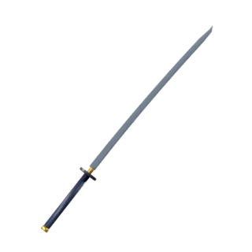 Katana |
| Left hand | Katana |
| Slot | Name | What it does | Engine | Look |
|---|---|---|---|---|
| Basic attack | Unarmed | What its template does | Unarmed: hits up close | Its element's look |
| Active 1 | Encore Kha Ja | Asked below | Brawler Shotgun: hits in a cone | Metal spray |
| Active 2 | Bhussi Bar De | Asked below | Whirlwind: hits around it | Wind ring |
| Passive | Berserk | What its template does | Berserk: powers up | Its element's look |
| Ultimate | Kendrick Se Bhi Upar | Transforms into a bigger, stronger self | Super Form: changes size, powers up | Energy glow |
| Movement | Sky Step | What its template does | Sky Step: moves, powers up on the move | Wind streak |
The ultimate is Super Form, so the hero grows large. The form arrives in a burst of power with a flame aura, and while it lasts the hero gets:
- Eyes
Then the reader asks what it couldn't tell:
- What should Encore Kha Ja do? A devouring combo · A sound blast
- What should Bhussi Bar De do? A taunt · A stun
- Does he grow, shrink, or keep his size? Grows large · Keeps his size · Shrinks to tiny
Offline, with no picture to look at, the Forge still gets all three names from the words (Encore Kha Ja, Bhussi Bar De, Kendrick Se Bhi Upar) and asks three questions. It can't see the swords, so the hands stay empty until you name them.
Three beams, one template
Kamehameha, Galick Gun and Special Beam Cannon can all fire on Mega Beam (mage-mega-beam), with its numbers and its hit area: Spirit damage 562 (405.6 + 3.1× spirit) · Knock back 5 m · Beam width 1 m. Their looks are where they part ways.
| Move | Form | Colours | Pose | Charge | Impact |
|---|---|---|---|---|---|
| Kamehameha | Wave | Hip charge | Gather | Dome | |
| Galick Gun | Crackle | Palms forward | Crackling aura | Burst | |
| Special Beam Cannon | Drill | Two fingers | Glowing fingertip | Pierce |
Four transformations
Each one takes its own template, and that sets the size. The look does the rest.
| Form | Template | Size | Arrives as | Around it | Size change | And |
|---|---|---|---|---|---|---|
| Titan | Titan Formtank-titan-form | Colossal 1.6× | Lightning strike | Steam | Swell | Nothing more |
| Ant-Man | Shrink Formassassin-shrink-form | Tiny 0.8× | Implode | None | Snap |
|
| Nine-Tails | Avatar Formfighter-avatar-form | Huge 1.3× | Swirl | Chakra cloak | Swell |
|
| Super Saiyan | Ascended Formfighter-ascended-form | Its own | Burst of power | Flame aura | None |
|
The roster
The heroes the game offers: the six Johns, one man at each of the six sizes, each fighting a different way, and six generated characters, each in its own mesh. Every slot is a catalogue template chosen for what the hero is, under the hero's own name for it.
- VPocket Knives Paired
- Left clickFlick Knives Throwing Knives
- QChip Smoke Smoke Bomb
- FUnderfoot Evasion
- RThousand Cuts Thousand Cuts
- ERail Runner Wall Run
- VBoot Work Kicks
- Left clickThree-Round Burst Burst Fire
- QSnap Trap Bear Trap
- FSteady Hands Steady Aim
- RHigh Noon Gunslinger
- ECombat Roll Combat Roll
- VHouse Blade Blade
- Left clickSidearm Sidearm
- QRiposte Riposte
- FMomentum Momentum
- RBlade Storm Blade Storm
- EGrapple Grapple Hook
- VSword and Board Sword and shield
- Left clickShoulder Cannon Shoulder Cannon
- QChain Hook Chain Hook
- FIron Skin Iron Skin
- REarthquake Earthquake
- ECrater Leap Crater Leap
- VWrench Club
- Left clickNail Gun Nail Gun
- QSentry Turret Sentry Turret
- FTinkerer Tinkerer
- RWar Machine War Machine
- EThruster Skid Thruster Skid
- VPole Staff Axe or staff
- Left clickMending Shot Mending Shot
- QLucky Totem Healing Totem
- FShelter Aura of Renewal
- RSanctuary Sanctuary
- EGuardian Leap Guardian Leap
- VRage Barrage Unarmed
- Left clickKi Blast Ki Blast
- QGigantic Slam Ground Breaker
- FEndless Rage Berserk
- RBerserk Form Avatar Form
- EBerserk Rush Gap Closer
- VGryffindor Sword Blade
- Left clickStupefy Arcane Bolt
- QProtego Drink the Blow
- FTime-Turner Chrono Rewind
- RExpecto Patronum Mega Beam
- EBroom Flight Levitate
- VBranch Lash Flexible
- Left clickSap Drain Siphon Beam
- QSapling Healing Totem
- FWe Are Groot Martyr
- RBranch Cocoon Sanctuary
- ERoot Spring Guardian Leap
- VLazy Kicks Kicks
- Left clickCase Thread Bolas
- QI Know Your Move Spell Steal
- FSleepless Mind Mind Fray
- RThe Trap Is Set Labyrinth
- EBack to the Scene Time Recall
- VPiston Fists Unarmed
- Left clickShoulder Cannon Shoulder Cannon
- QHydraulic Slam Seismic Slam
- FHeavy Plating Juggernaut
- RHeavy Shell Titan Form
- EThrusters Jetpack
- VTitan Fists Unarmed
- Left clickSteam Burst Shockwave Punch
- QRoar Sonic Shockwave
- FSteaming Flesh Regenerating Core
- RStampede Earthquake
- ETitan Leap Crater Leap
The balance sample
Twenty heroes generated from one seed, two squads of ten: every role at least once a squad, a kit drawn from each row's pool, an invented name, a body and colours. Nothing about them is hand-made, so each is a fair sample of what the Forge builds; the balance gate and the soak test use them, and no screen offers them.
Weight 0.44 · muscle 0.5 · age 0.02
- VGreatsword
- Left clickThrowing Knives
- QBody Slam
- FIron Skin
- RGrand Challenge
- ECrater Leap
Weight 0.67 · muscle 0.48 · age 0.38
- VBlade
- Left clickSidearm
- QGround Breaker
- FVampiric Edge
- RMeteor Combo
- EAir Dash
Weight 0.31 · muscle 0.48 · age 0.03
- VAxe or staff
- Left clickSilenced Pistol
- QSmoke Bomb
- FVanish
- RDeath Blossom
- EWall Run
Weight 0.4 · muscle 0.42 · age 0.11
- VAxe or staff
- Left clickArcane Bolt
- QComet
- FSprint Burst
- RMeteor Storm
- EGravity Step
Weight 0.62 · muscle 0.6 · age 0.22
- VGreatsword
- Left clickShotgun Blast
- QRicochet
- FKill Rush
- RArtillery Barrage
- EAir Dash
Weight 0.68 · muscle 0.47 · age 0.01
- VClub
- Left clickArcane Bolt
- QGuardian Bubble
- FChrono Rewind
- RMass Haste
- ESky Step
Weight 0.53 · muscle 0.38 · age 0.17
- VSword and shield
- Left clickGravity Orb
- QVortex
- FOverwhelm
- RTime Stop
- EAir Dash
Weight 0.39 · muscle 0.69 · age 0.43
- VKicks
- Left clickArcane Bolt
- QHealing Totem
- FOverclocked
- RDrone Carrier
- EAir Dash
Weight 0.37 · muscle 0.69 · age 0.45
- VGreatsword
- Left clickEnergy Wave
- QChain Hook
- FGiant Body
- RUnbreakable
- EBulldozer
Weight 0.49 · muscle 0.52 · age 0.48
- VKicks
- Left clickEmber Spray
- QFlame Pillar
- FChrono Rewind
- RInferno
- ETime Recall
Weight 0.49 · muscle 0.79 · age 0.52
- VSword and shield
- Left clickEnergy Wave
- QGround Spikes
- FShield Wall
- RImmovable Object
- EGuardian Leap
Weight 0.49 · muscle 0.61 · age 0.46
- VClub
- Left clickBrawler Shotgun
- QGround Breaker
- FFerocity
- RLimit Break
- EPower Slide
Weight 0.66 · muscle 0.33 · age 0.29
- VGreatsword
- Left clickBolas
- QReveal Pulse
- FShrink
- RAssassinate
- ETeleport
Weight 0.39 · muscle 0.75 · age 0.31
- VKicks
- Left clickSidearm
- QLightning Lance
- FElemental Body
- RSingularity
- EAir Dash
Weight 0.63 · muscle 0.62 · age 0.32
- VAxe or staff
- Left clickLongbow
- QReveal Pulse
- FRapid Reload
- RGunslinger
- EAir Dash
Weight 0.58 · muscle 0.73 · age 0.16
- VClub
- Left clickChime Orb
- QEcho Ping
- FGuardian Spirit
- RGuardian Angel
- ELevitate
Weight 0.63 · muscle 0.46 · age 0.22
- VBlade
- Left clickFrost Shard
- QSilence Field
- FSprint Burst
- REvent Horizon
- EWind Step
Weight 0.44 · muscle 0.31 · age 0.29
- VAxe or staff
- Left clickShotgun Blast
- QRocket Turret
- FTinkerer
- RDrone Carrier
- EAir Dash
Weight 0.53 · muscle 0.64 · age 0.6
- VGreatsword
- Left clickHex Bolt
- QFlame Pillar
- FElemental Body
- RMeteor Storm
- ELevitate
Weight 0.62 · muscle 0.59 · age 0.15
- VSword and shield
- Left clickEnergy Wave
- QTerrify
- FOverwhelm
- REvent Horizon
- EGravity Step
The pieces: 16, free to hold
We built them in Blender. Each hangs on a hand's socket and takes one colour. Under each are a few of the words a prompt can use for it.
katana- Takes a colour
katana, samurai sword, japanese sword
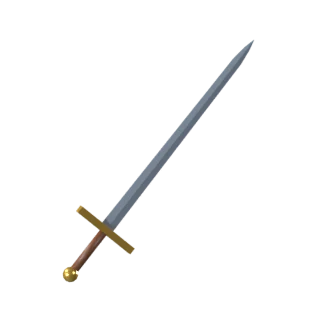
sword- Takes a colour
sword, longsword, broadsword
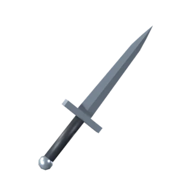
dagger- Takes a colour
dagger, knife, dirk
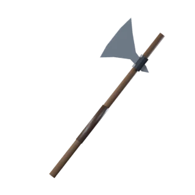
axe- Takes a colour
axe, battle axe, battleaxe
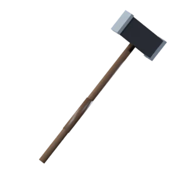
hammer- Takes a colour
hammer, warhammer, war hammer
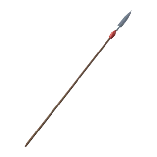
spear- Takes a colour
spear, lance, javelin
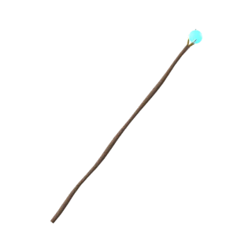
staff- Takes a colour
staff, magic staff, quarterstaff
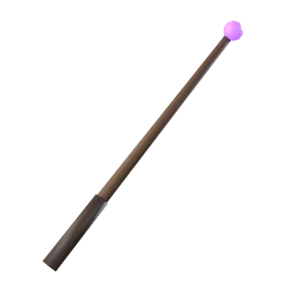
wand- Takes a colour
wand, magic wand, magician
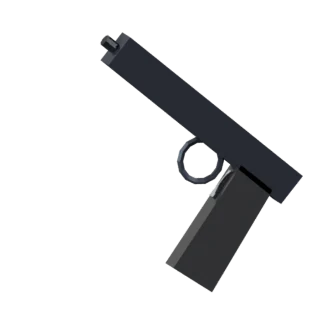
pistol- Takes a colour
pistol, gun, handgun
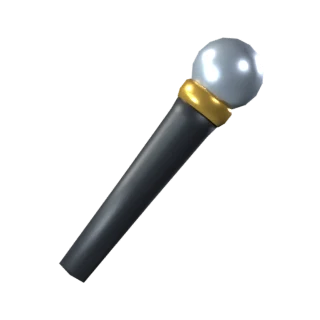
microphone- Takes a colour
microphone, mic, singer
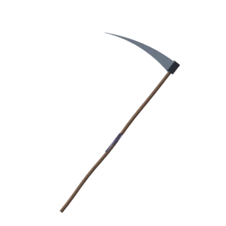
scythe- Takes a colour
scythe, reaper, grim reaper
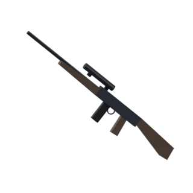
rifle- Takes a colour
rifle, sniper rifle, assault rifle
spellbook- Takes a colour
spellbook, grimoire, magic book
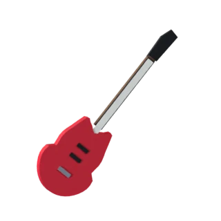
electric_guitar- Takes a colour
electric guitar, guitar, bass guitar
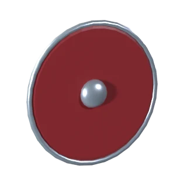
shield- Takes a colour
shield, round shield, buckler
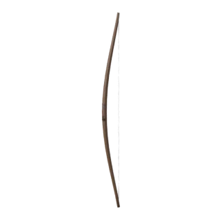
bow- Takes a colour
bow, longbow, recurve bow